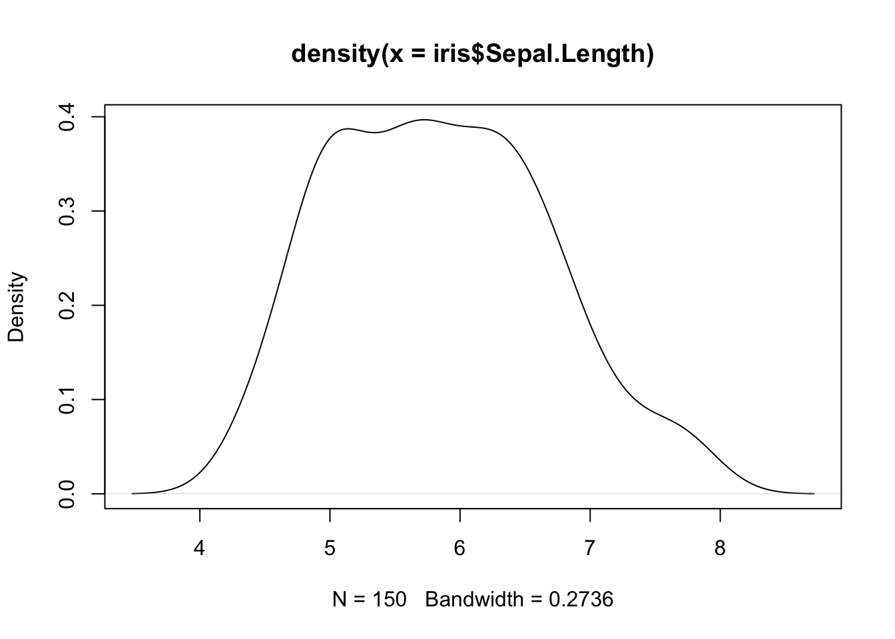
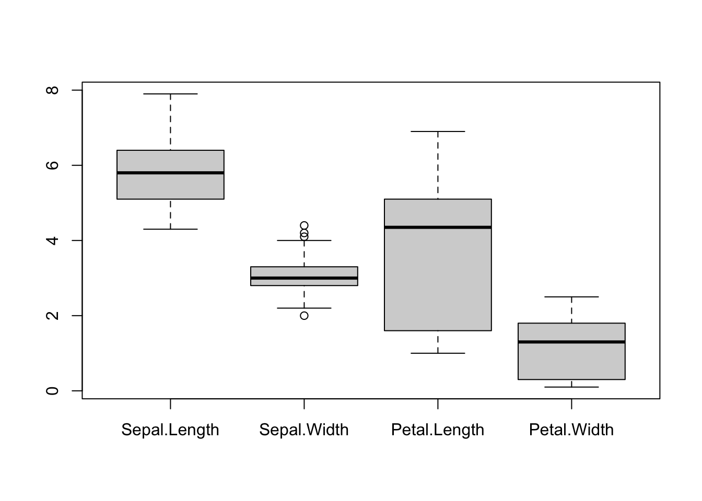
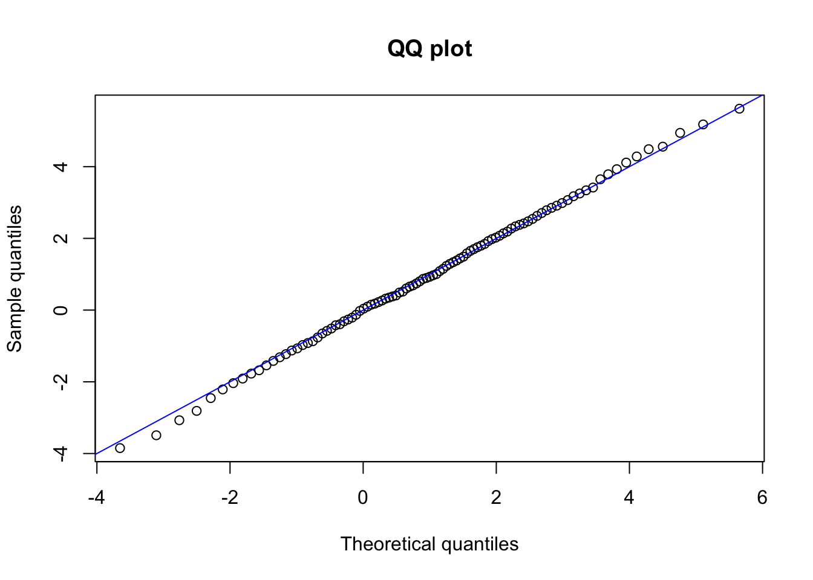
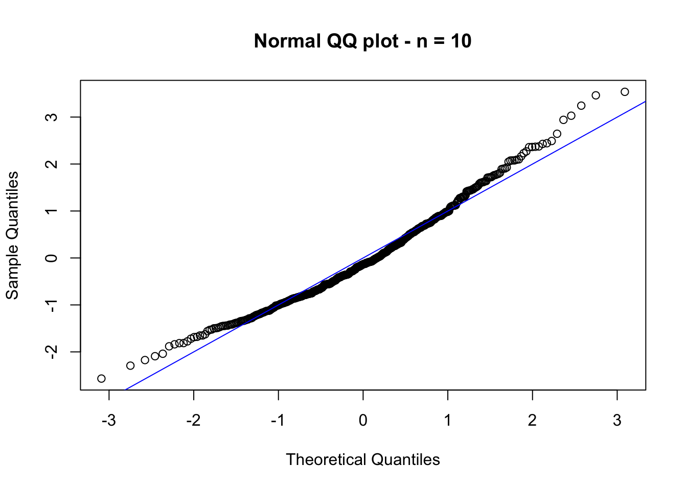
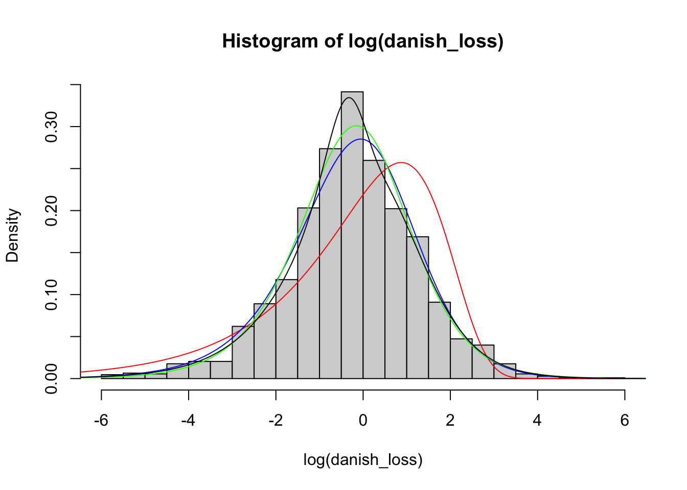
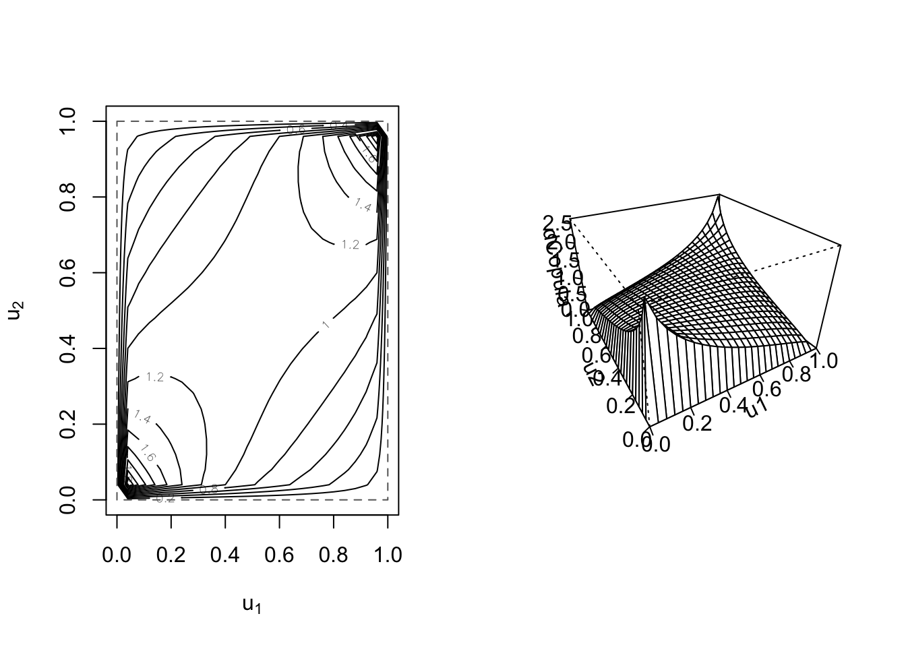
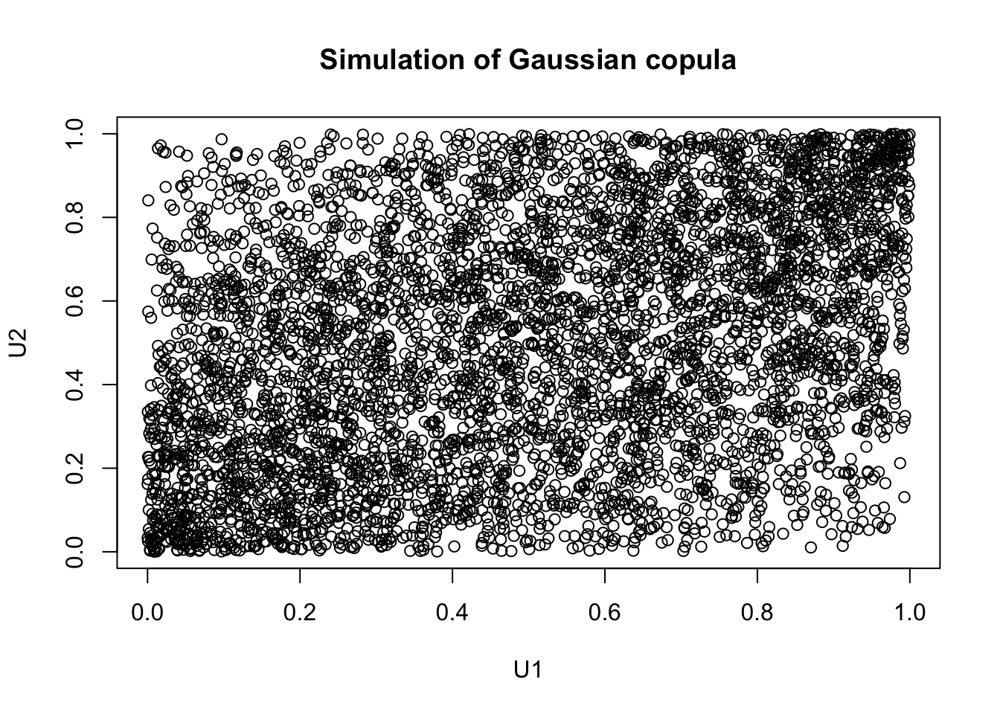

2 R for Statistical Inference
2.1 Descriptive statistics
When working with real-life data, one of the first things we may want to do is get a general understanding of the data. For this purpose, we can use some descriptive statics and plots available in R.
R comes with some databases that can be accessed using the data() function. Moreover, we can see the list of data sets available by typing data(). For example, we can find the iris data set (use ?iris for a complete description of the data). Although not an insurance or financial data set, we will use iris in this section since it is readily available, and the tools presented here do not depend on the source of the data.
First, we need to load the data into our working space using data():
data(iris)Now, the iris should appear in the Environment tab. Note that iris is a data frame, which is one of the most common ways of presenting data in R.
str(iris)## 'data.frame': 150 obs. of 5 variables:
## $ Sepal.Length: num 5.1 4.9 4.7 4.6 5 5.4 4.6 5 4.4 4.9 ...
## $ Sepal.Width : num 3.5 3 3.2 3.1 3.6 3.9 3.4 3.4 2.9 3.1 ...
## $ Petal.Length: num 1.4 1.4 1.3 1.5 1.4 1.7 1.4 1.5 1.4 1.5 ...
## $ Petal.Width : num 0.2 0.2 0.2 0.2 0.2 0.4 0.3 0.2 0.2 0.1 ...
## $ Species : Factor w/ 3 levels "setosa","versicolor",..: 1 1 1 1 1 1 1 1 1 1 ...Remark. Some R packages include data sets. For instance, install and load the package insuranceData. Here you will find the dataCar data set.
The first thing that we may want to do is to compute some measures of central tendency and variability. Let us focus for now on the column Sepal.Lenght. Regarding measures of central tendency, these refer to measures such as the mean and the median. We already know that the function mean() can be used to compute the sample mean.
mean(iris$Sepal.Length)## [1] 5.843333We can also compute the sample median using the median() function. Recall that the sample median refers to the value in the middle of the observations.
median(iris$Sepal.Length)## [1] 5.8Let us now move to some measures of variability, which help us understand how spread the data is. First, we can look at the minimum and maximum values, which can be obtained using the functions min() and max() receptively.
min(iris$Sepal.Length)## [1] 4.3max(iris$Sepal.Length)## [1] 7.9Alternatively, we can use the range() function to compute both minimum and maximum simultaneously.
range(iris$Sepal.Length)## [1] 4.3 7.9Next, we can look at the variance, which measures how the data values are dispersed around the mean. This can be computed with the var() function:
var(iris$Sepal.Length)## [1] 0.6856935A related measure is the standard deviation, which is simply the square root of the variance. To compute it, we can use sd():
sd(iris$Sepal.Length)## [1] 0.8280661Finally, we may be interested in computing the sample quantiles of our data. The R command to do so is quantile():
quantile(iris$Sepal.Length)## 0% 25% 50% 75% 100%
## 4.3 5.1 5.8 6.4 7.9Note that by default, R computes the quantiles of 0% (min), 25%, 50% (median), 75%, and 100% (max). However, we can change this with the argument probs:
quantile(iris$Sepal.Length, probs = seq(0.1, 0.9, by = 0.1))## 10% 20% 30% 40% 50% 60% 70% 80% 90%
## 4.80 5.00 5.27 5.60 5.80 6.10 6.30 6.52 6.90Although all the above measures can be computed separately, the summary() function provides an easier way to compute several of them at once:
summary(iris$Sepal.Length)## Min. 1st Qu. Median Mean 3rd Qu. Max.
## 4.300 5.100 5.800 5.843 6.400 7.900Moreover, if our data set has several columns, summary() can compute all these measures for all columns at the same time:
summary(iris)## Sepal.Length Sepal.Width Petal.Length Petal.Width
## Min. :4.300 Min. :2.000 Min. :1.000 Min. :0.100
## 1st Qu.:5.100 1st Qu.:2.800 1st Qu.:1.600 1st Qu.:0.300
## Median :5.800 Median :3.000 Median :4.350 Median :1.300
## Mean :5.843 Mean :3.057 Mean :3.758 Mean :1.199
## 3rd Qu.:6.400 3rd Qu.:3.300 3rd Qu.:5.100 3rd Qu.:1.800
## Max. :7.900 Max. :4.400 Max. :6.900 Max. :2.500
## Species
## setosa :50
## versicolor:50
## virginica :50
##
##
## Note that our data set has a column called Species, indicating the flower species. Although the summary function above already provides us with the list of species (three species), we can also use the unique() function to check how many species we have:
unique(iris$Species)## [1] setosa versicolor virginica
## Levels: setosa versicolor virginicaNow, we can use Species to give more insides into our data set. For example, we may be interested in computing the mean of Sepal.Lenght by species. For that, we can use the function tapply() as follows:
tapply(iris$Sepal.Length, iris$Species, mean)## setosa versicolor virginica
## 5.006 5.936 6.588Or we can use tapply() in conjunction with summary().
tapply(iris$Sepal.Length, iris$Species, summary)## $setosa
## Min. 1st Qu. Median Mean 3rd Qu. Max.
## 4.300 4.800 5.000 5.006 5.200 5.800
##
## $versicolor
## Min. 1st Qu. Median Mean 3rd Qu. Max.
## 4.900 5.600 5.900 5.936 6.300 7.000
##
## $virginica
## Min. 1st Qu. Median Mean 3rd Qu. Max.
## 4.900 6.225 6.500 6.588 6.900 7.900We may also be interested in seeing if there is a relationship among the different columns of our data set. For that purpose, we can start, for instance, by computing their correlation, a measure of how a pair of variables are linearly related. Recall that for two vectors \(\mathbf{x} = (x_1, \dots, x_n)\) and \(\mathbf{y} = (y_1, \dots, y_n)\) the sample covariance is given by
\[
\mbox{Cov}(\mathbf{x}, \mathbf{y}) = \frac{1}{n-1} \sum_{i = 1}^{n} \frac{(x_i - \bar{x})(y_i - \bar{y})}{s_{x}s_{y}} \,,
\]
where \(s_{\mathbf{x}}\) and \(s_{\mathbf{y}}\) are the sample standard deviations of \(\mathbf{x}\) and \(\mathbf{y}\), respectively. In R, the sample correlation is computed using the cor() function. For example,
cor(iris$Sepal.Length, iris$Sepal.Width)## [1] -0.1175698If we have several (numeric) columns, we can compute all correlations at once:
cor(iris[, -5])## Sepal.Length Sepal.Width Petal.Length Petal.Width
## Sepal.Length 1.0000000 -0.1175698 0.8717538 0.8179411
## Sepal.Width -0.1175698 1.0000000 -0.4284401 -0.3661259
## Petal.Length 0.8717538 -0.4284401 1.0000000 0.9628654
## Petal.Width 0.8179411 -0.3661259 0.9628654 1.0000000Remark. The cor() computes, by default, the Person’s correlation coefficient described above. However, we can use the method argument to calculate Kendall’s tau and Spearman’s rho, two measures that assess how well the relationship between two variables can be described using a monotonic function. We will review these two other measures later on.
2.1.1 Visual tools
We now present some R tools that can be employed to visualize data. More specifically, we will see how to create histograms, box plots, and scatter plots.
Histograms
To create a histogram, we can use the hist() function. For instance, to draw a histogram for Sepal.Length, we type:
hist(iris$Sepal.Length)
We can customize our plot further using the different arguments of hist() (see ?hist):
hist(iris$Sepal.Length,
breaks = 15, # Number of cells in the histogram
main = "Histogram of Sepal Lenght", # Main tittle
xlab = "Sepal Lenght", # Text on the x-axis
freq = FALSE, # Probability density
xlim = c(4, 8), # Range for the x-axis
col = "blue" # Color to fill the bars
)
R also allows to compute kernel density estimates via the density() function.
plot(density(iris$Sepal.Length))
We can combine our two previous plots using lines() as follows:
hist(iris$Sepal.Length,
breaks = 15, # Number of cells in the histogram
main = "Histogram of Sepal Lenght", # Main tittle
xlab = "Sepal Lenght", # Text on the x-axis
freq = FALSE, # Probability density
xlim = c(4, 8), # Range for the x-axis
col = "blue" # Color to fill the bars
)
lines(density(iris$Sepal.Length),
lwd = 3, # Line width
col = "red" # Color of the line
)
Box plots
To produce box plots, R uses the boxplot() function. Let us try an example with the iris data set:
boxplot(iris$Sepal.Length)
We can create box plots for the different (numeric) columns of iris at the same time:
boxplot(iris[, -5])
Let us now customize the above plot:
boxplot(iris[, -5],
main = "Box plot - Iris data set",
names = c(
"Sepal length", "Sepal width",
"Petal length", "Petal width"
), # Change names of x axis
col = "green"
)Scatter plots
Scatter plots can help us to visualize the relationship between the different data columns. We can use the plot() function to create a scatter plot. For instance, below, we plot Sepal Length against Petal Length:
plot(iris$Sepal.Length, iris$Petal.Length,
panel.first = grid(8, 8), # Adds a 8x8 grid
cex = 1.2, # Size of the dots
col = "blue",
xlab = "Sepal length",
ylab = "Petal length",
main = "Iris - Sepal length and petal length"
)Finally, for data with several columns, we can plot them all at once:
plot(iris[, -5],
col = "blue",
)2.2 Probability distributions
R comes with several parametric probability distributions that can help us to describe our data. Every distribution in R has four functions, which can be called by using the root name of the distribution (e.g., exp) preceded by one of the following letters:
d: The probability density function (pdf).p: The cumulative distribution function (cdf).q: Quantile.r: Random generator for the specified distribution.
For instance, the exponential distribution has the four functions: dexp(), pexp(), qexp() and rexp().
Table 2.1 shows the continuous distributions, and Table 2.2 the discrete distributions available by default in R. Note, however, that these two lists are far from comprehensive since there are several other distributions not contained there. Fortunately, other distributions may be available in different packages. For example, an implementation for the Pareto distribution can be found in the actuar R package.
| Distribution | Root name |
|---|---|
| Beta | beta |
| Cauchy | cauchy |
| Chi-2 | chisq |
| Exponential | exp |
| Fisher F | f |
| Gamma | gamma |
| Logistic | logis |
| Lognormal | lnorm |
| Normal | norm |
| Student t | t |
| Uniform | unif |
| Weibull | weibull |
| Distribution | Root name |
|---|---|
| Binomial | binom |
| Geometric | geom |
| Hypergeometric | hyper |
| Negative Binomial | nbinom |
| Poisson | pois |
Remark. When using these R built-in functions, we must be careful and check the parametric form implemented for these distributions since they may differ from the ones we are familiar with. For instance, in R, the pdf of the Gamma distribution has two parametrizations (see help - ?pgamma). The first one is
\[
f(x) = \frac{1}{\sigma^\alpha \Gamma(\alpha)} x^{\alpha-1} e^{-x/\sigma} \,, \quad x\ge 0\,,
\]
where \(\alpha>0\) and \(\sigma>0\) and is accessible by using the arguments shape (\(\alpha\)) and scale (\(\sigma\)). The second parametrization is
\[
f(x) = \frac{\lambda^\alpha}{ \Gamma(\alpha)} x^{\alpha-1} e^{-\lambda x} \,, \quad x\ge 0\,,
\]
where \(\alpha>0\) and \(\lambda>0\), which correspond to the use of the arguments shape (\(\alpha\)) and rate (\(\lambda\)). However, note that both representations are equivalent. Indeed, take \(s = 1/\lambda\) and \(a = \alpha\).
We now look at some examples of how to use these functions, and we will use the normal distribution to do so. Recall that a random variable \(X\) is said to be normal distributed with mean \(\mu \in \mathbb{R}\) and standard deviation \(\sigma>0\), if its density function is given by \[ f(x) = \frac{1}{\sigma \sqrt{2 \pi }} \exp\left({- \frac{(x - \mu)^2}{2 \sigma^2}}\right) \,, \quad x\in \mathbb{R}\,. \] We write \(X \sim N(\mu, \sigma^2)\).
In R, this density can be evaluated using the dnorm() function. For instance,
dnorm(1) # mu = 0, sigma = 1## [1] 0.2419707dnorm(1, 1, 2) # mu = 1, sigma = 2## [1] 0.1994711We will now plot this density function for different combinations of parameters.
The usual way to plot a function in R is first generate a sequence of numbers, then evaluate the desired function at the generated sequence, and finally use plot().
sq <- seq(-5, 5, by = 0.01)
plot(sq, dnorm(sq), type = "l", ylim = c(0, 0.85), ylab = "f(x)", xlab = "x")
lines(sq, dnorm(sq, 0, 0.5), col = "red")
lines(sq, dnorm(sq, 0, 2), col = "blue")
lines(sq, dnorm(sq, 1, 1), col = "green")
lines(sq, dnorm(sq, -1, 1), col = "orange")
legend("topright",
leg = paste0("mu = ", c(0, 0, 0, 1, -1), ", sigma = ", c(1, 0.5, 2, 1, 1)),
lty = 1,
col = c("black", "red", "blue", "green", "orange")
)Next, we consider the distribution function of \(X \sim N(\mu, \sigma^2)\). Recall that this is given by
\[
F(x) = \mathbb{P} (X \leq x) = \int_{-\infty}^x \frac{1}{\sigma \sqrt{2 \pi }} \exp\left({- \frac{(y - \mu)^2}{2 \sigma^2}}\right) dy \,.
\]
To evaluate this function in R, we can use pnorm(). For example, if we want to find \(\mathbb{P} (X \leq 1.8)\) for \(X \sim N(0, 1)\), we simply type:
pnorm(1.8)## [1] 0.9640697Note that pnorm() has an optional argument lower.tail. By default lower.tail takes the value TRUE, indicating that pnorm() will compute \(\mathbb{P} (X \leq x)\). However, we can compute \(\mathbb{P} (X > x) = 1 - \mathbb{P} (X \leq x)\) by using lower.tail = FALSE. For instance,
1 - pnorm(1.8)## [1] 0.03593032pnorm(1.8, lower.tail = FALSE)## [1] 0.03593032We can simulate random values following a \(N(\mu, \sigma^2)\) distribution via the rnorm() function. For example,
rnorm(10)## [1] 0.01874617 -0.18425254 -1.37133055 -0.59916772 0.29454513 0.38979430
## [7] -1.20807618 -0.36367602 -1.62667268 -0.25647839Note that every time you run rnorm(), it will generate a different set of values:
rnorm(10)## [1] 1.10177950 0.75578151 -0.23823356 0.98744470 0.74139013 0.08934727
## [7] -0.95494386 -0.19515038 0.92552126 0.48297852However, sometimes it is convenient to generate the same random sequence at will. This can allow us, for example, to replicate a study. To do this, we need to give R an initial seed to generate the random numbers, which is done via the set.seed() function. For example, consider the following code
set.seed(1)
rnorm(10)## [1] -0.6264538 0.1836433 -0.8356286 1.5952808 0.3295078 -0.8204684
## [7] 0.4874291 0.7383247 0.5757814 -0.3053884Then, if we run the code above again, we will get exactly the same sequence of values:
set.seed(1)
rnorm(10)## [1] -0.6264538 0.1836433 -0.8356286 1.5952808 0.3295078 -0.8204684
## [7] 0.4874291 0.7383247 0.5757814 -0.3053884A visual way to evaluate if certain data follows a specific distribution is to compare the histogram generated by the data and the density function of the distribution. Let us look at a simple example: First, we generate a random sample following a \(N(0, 1)\) distribution.
set.seed(1)
x <- rnorm(1000)Now, if the data would really follow a \(N(0, 1)\) distribution (which, in this case, it does by construction), the histogram of the data should be similar to the density of a \(N(0, 1)\) distribution. The following plot shows precisely this:
hist(x, freq = F, main = "Histogram vs density")
sq <- seq(-5, 5, by = 0.01)
lines(sq, dnorm(sq), type = "l", col = "red")Finally, we will look at the function to compute the quantiles of a distribution. Recall that for a random variable \(X\) with distribution function \(F\), its quantile function \(F^{\leftarrow}\) is given by \[ F^{\leftarrow}(p) = \inf \{x : p \leq F(x) \} \,, \quad p \in [0,1] \,. \] If the distribution function is continuous and strictly monotonic, then \(F^{\leftarrow}(p)\) satisfies that \[ F(F^{\leftarrow}(p)) = p \,. \] In other words, it corresponds to the inverse of \(F\).
Now, consider \(X \sim N(1, 2^2)\) and suppose that we want to find \(x\) such that \(P(X \leq x) = 0.95\). This can be done with the qnorm() function:
x <- qnorm(0.95, 1, 2)
x## [1] 4.289707pnorm(x, 1, 2) # Check## [1] 0.95An alternative visual way of evaluating if our data comes from a certain distribution is to plot the sample quantiles against the theoretical quantiles of the distribution to check. This is called a QQ-plot. If the data comes from that specific distribution, then we should observe that the points form (approximately) an identity line. Let us look at an example:
set.seed(1)
x <- rnorm(1000, 1, 2)
p <- seq(0.01, 0.99, by = 0.01)
the_quantile <- qnorm(p, 1, 2)
sam_quantile <- quantile(x, p)
plot(the_quantile, sam_quantile,
main = "QQ plot",
xlab = "Theoretical quantiles",
ylab = "Sample quantiles"
)
abline(0, 1, col = "blue") # Identity
2.2.1 Tranformations
Several distributions are obtained via transformations. For instance, a lognormal distributed random variable can be obtained by exponentiation of a normal distributed random variable. Here, we will illustrate how to use the previous implementations to work with transformations of random variables.
First, let us recall some results. Let \(Y\) be a continuous random variable with density and distribution functions \(f_{Y}\) and \(F_{Y}\), respectively. Now, consider a strictly increasing transformation \(g(\cdot)\), and define \(X = g(Y)\). Then, the distribution function \(F_X\) of X is given by \[ F_X(x) = \mathbb{P}(X \leq x) = \mathbb{P}(g(Y) \leq x) = \mathbb{P}(Y \leq g^{-1}(x)) = F_Y(g^{-1}(x)) \,. \] From the expression above, it follows that the density function \(f_X\) of \(X\) is given by \[ f_X(x) = f_Y(g^{-1}(x)) \frac{d}{dx} (g^{-1}(x)) \,. \]
Now, let us consider an explicit example: the lognormal distribution. Recall that a lognormal distributed random variable with parameters \(\mu\) and \(\sigma^2\) is obtained via the transformation
\[
X = \exp(Y) \,,
\]
where \(Y \sim N(\mu, \sigma^2)\). We write \(X \sim LN(\mu, \sigma^2)\). Although already implemented in R under the root name lnorm, we can use this distribution to illustrate how to work with transformations and, at the same time, verify our computations. Note that in this case \(g(y) = \exp(y)\), \(y \in \mathbb{R}\), and \(g^{-1}(x) = \log(x)\), \(x>0\).
We can now compute the distribution function \(F_X(x)\) of \(X \sim LN(\mu, \sigma^2)\) at \(x\), by using pnorm() evaluated at \(g^{-1}(x) = \log(x)\). For example, for \(X \sim LN(1, 2^2)\), \(\mathbb{P}(X \leq 3)\) can be computed as follows:
user_plnorm <- function(x, mu, sigma) {
pnorm(log(x), mu, sigma)
}
user_plnorm(3, 1, 2)## [1] 0.5196623plnorm(3, 1, 2) # Check## [1] 0.5196623Now for the density evaluation, we need \(\frac{d}{dx}(g^{-1}(x)) = 1/x\). Thus, the density evaluation at \(x = 3\) for \(X \sim LN(1, 2^2)\) can be computed as:
user_dlnorm <- function(x, mu, sigma) {
dnorm(log(x), mu, sigma) / x
}
user_dlnorm(3, 1, 2)## [1] 0.06640961dlnorm(3, 1, 2) # Check## [1] 0.06640961In this case, since our transformation is strictly monotonic, we can compute the quantiles easily.
user_qlnorm <- function(p, mu, sigma) {
exp(qnorm(p, mu, sigma))
}
user_qlnorm(0.95, 1, 2)## [1] 72.94511qlnorm(0.95, 1, 2) # Check## [1] 72.94511Simulation can also be performed using the relationship \(X = \exp(Y)\):
user_rlnorm <- function(n, mu, sigma) {
exp(rnorm(n, mu, sigma))
}
set.seed(1)
user_rlnorm(10, 1, 2)## [1] 0.7765396 3.9246872 0.5110656 66.0598801 5.2541358 0.5267987
## [7] 7.2055971 11.9013211 8.5982845 1.4758340In this very particular case, we can check that our simulation is correct by using rlnorm():
set.seed(1)
rlnorm(10, 1, 2)## [1] 0.7765396 3.9246872 0.5110656 66.0598801 5.2541358 0.5267987
## [7] 7.2055971 11.9013211 8.5982845 1.47583402.2.2 Law of large numbers and central limit theorem
We now recall two important results in probability theory and illustrate them using R, namely the Law of Large Numbers and the Central Limit Theorem. We start with the Law of Large Numbers:
Theorem 2.1 Let \(X_1,X_2,\dots\) be a sequence of i.i.d. random variables such that \(\mathbb{E}[X_1]=\mu<\infty\). Then, for any \(\epsilon >0\) \[ \underset{n\rightarrow \infty}{\lim}\mathbb{P}(|\bar{X}_n-\mu|\geq \epsilon)=0 \,, \] where \(\bar{X}_n = n^{-1}\sum_{i = 1}^n X_i\) denotes the sample mean. In other words, as the sample size \(n\) increases, the probability that the sample mean \(\bar{X}_n\) is different from the population mean \(\mu\) converges to zero.
We now illustrate this result via a simulation:
n <- 1000
plot(cumsum(rnorm(n)) / 1:n,
xlab = "Sample size",
ylab = "Sample mean",
col = "darkgray"
)
abline(0, 0, col = "blue")In the figure above, we can observe that as the sample size increases, the sample mean gets closer to the population mean (zero). Next, we recall the Central Limit Theorem:
Theorem 2.2 Let \(X_1,X_2,\ldots\) be a sequence of i.i.d. random variables with a finite expected value \(\mathbb{E}[X_1]=\mu<\infty\) and variance \(\mbox{Var}(X_1)= \sigma^2 <\infty\). Now, let \(Z_n\) be the standardized mean given by \[ Z_n:=\frac{\bar{X}_n-\mu}{\sigma/\sqrt{n}}. \] Then, for \(n\) sufficiently large, \[ Z_n\simeq N(0,1). \] Or equivalently, \[ \bar{X}_n\simeq N(\mu,\sigma^2/n)\,,\quad \] In other words, for sufficiently large \(n\), the sample mean \(\bar{X}_n\) is close to being normal distributed with mean \(\mu\) and variance \(\sigma^2/n\).
Let us exemplify this result via a simulation study. The idea is as follows: consider a sample of size \(n\) from an exponential distributed random variable with mean \(1/\lambda\). If we were to observe several samples of size \(n\) from this distribution, let’s say \(p\) samples, and compute \(Z_n^{(j)}\) for each sample \(j = 1,\dots, p\), then for \(n\) large enough \(Z_n^{(j)}\), \(j = 1,\dots, p\), should be approximately a sample from a standard normal distributed random variable. We could then check if \(Z_n^{(j)}\), \(j = 1,\dots, p\) is truly normal distributed via, e.g., a QQ-plot. Let us try this, with \(n = 10\), \(p = 500\) and \(\lambda = 0.5\):
n <- 10 # Sample size
p <- 500 # Replications of the experiment
lambda <- 0.5
sim_exp <- matrix(rexp(n * p, lambda), p, n) # Simulations in matrix form
samp_mean <- apply(sim_exp, 1, mean) # Sample mean for each replication
mu <- 1 / lambda # Population mean
sigma2 <- 1 / lambda^2 # Population variance
std_mean <- (samp_mean - mu) / (sqrt(sigma2 / n)) # Standardized mean (Z_n)
qqnorm(std_mean, main = "Normal QQ plot - n = 10") # QQ-plot with standard normal
abline(0, 1, col = "blue")
In the figure above, we observe that \(Z_n\) is not standard normal distributed (yet). However, if we now consider \(n = 1000\), the conclusion changes (see figure below).
2.3 Parametric inference
In the last section, we presented some distributions in R that can be used to model our data. However, so far, we have not covered how to fit these models to given data, which is essential for their application in insurance and finance. Therefore, this section aims to present some estimation methods available.
2.3.1 Maximum likelihood estimation
Let \(\boldsymbol{X} = (X_1, \dots, X_n)\) be a random sample such that \(X_i\) are i.i.d. random variables with common distribution function \(F(\cdot; \boldsymbol{\theta})\), where \(\boldsymbol{\theta} = (\theta_1,\dots,\theta_d) \in \boldsymbol{\Theta} \subset \mathbb{R}^d\). Here, \(\boldsymbol{\Theta}\) is known as the parameter space. Given an observed data sample \(\mathbf{x} = (x_1, \dots, x_n)\) from \(\boldsymbol{X}\), the likelihood function \(L\) is defined as the joint density (as a function of \(\boldsymbol{\theta}\)) evaluated at \(\mathbf{x}\), that is,
\[ L(\boldsymbol{\theta}; \mathbf{x})= f_{\boldsymbol{X}} (\mathbf{x}; \boldsymbol{\theta}) = \prod_{i = 1}^{n} f(x_i; \boldsymbol{\theta}) \,. \] The maximum likelihood estimator (MLE) is defined as the value of \(\boldsymbol{\theta}\) that maximizes the likelihood function, that is,
\[ \hat{\boldsymbol{\theta}} = \mathrm{arg\,max}_{\boldsymbol{\theta} \in \boldsymbol{\Theta}} L(\boldsymbol{\theta}; \mathbf{x}) = \mathrm{arg\,max}_{\boldsymbol{\theta} \in \boldsymbol{\Theta}} \prod_{i = 1}^{n} f(x_i; \boldsymbol{\theta}) \,. \]
In practice, it is often more convenient to work with the loglikelihood function \(l\), which is obtained by taking \(\log\) of the likelihood function, i.e., \[ l(\mathbf{x}, \boldsymbol{\theta}) = \log(L(\boldsymbol{\theta}; \mathbf{x})) = \sum_{i = 1}^{n} \log\left(f(x_i; \boldsymbol{\theta}) \right) \,. \] Since \(\log\) is an increasing continuous function, maximizing the loglikelihood is equivalent to maximizing the likelihood. In other words, \[ \hat{\boldsymbol{\theta}} = \mathrm{arg\,max}_{\boldsymbol{\theta} \in \boldsymbol{\Theta}} l(\boldsymbol{\theta}; \mathbf{x}) = \mathrm{arg\,max}_{\boldsymbol{\theta} \in \boldsymbol{\Theta}} \sum_{i = 1}^{n} \log(f(x_i; \boldsymbol{\theta})) \,. \] Lets us now give some examples of how to implement loglikelihood functions in R. We start by considering the exponential distribution. First, we simulate a sample following this distribution:
set.seed(1)
lambda <- 1.5
x_exp <- rexp(1000, lambda)The following implementation computes the loglikelihood, assuming exponential distributed observations, for different parameters:
loglik_exp <- function(x, lambda) {
sum(log(dexp(x, lambda)))
}Given that our data originally comes from an exponential distribution with \(\lambda = 1.5\), we expect that values close to \(1.5\) return larger values.
loglik_exp(x_exp, 0.5)## [1] -1036.915loglik_exp(x_exp, 1)## [1] -687.5351Moreover, we can plot the loglikelihood as a function of \(\lambda\). To do so, we need to modify our loglikelihood implementation above to work with vector inputs for the parameter. Otherwise, we will obtain only one incorrect evaluation:
loglik_exp(x_exp, c(0.5, 1))## [1] -865.5976Note that the above is in fact is computing
loglik_exp(x_exp[2 * (1:500) - 1], 0.5) + loglik_exp(x_exp[2 * (1:500)], 1)## [1] -865.5976due to the recycling of information that R performs. One possible way to modify the function to work with vectors is the following:
loglik_exp <- function(x, lambda) {
ll <- rep(0, length(lambda))
for (i in 1:length(lambda)) {
ll[i] <- sum(log(dexp(x, lambda[i])))
}
ll
}With this new implementation, we obtain:
loglik_exp(x_exp, c(0.5, 1))## [1] -1036.9147 -687.5351Now, we can generate our plot.
lambda_sq <- seq(0.01, 4, by = 0.01)
plot(lambda_sq, loglik_exp(x_exp, lambda_sq),
main = "Loglikelihood",
ylab = "l(lambda; x)",
xlab = "Lambda",
type = "l"
)
abline(v = 1.5, col = "red")The figure above shows that the loglikelihood is maximized around the original value \(\lambda = 1.5\) (as expected).
Remark. The process of making a scalar function work with vectors is sometimes called: vectorization of a scalar function. There are other ways to solve the same problem, and here we present two more. The first one is to use the sapply() function. For instance, let us consider our initial implementation of the loglikelihood:
loglik_exp <- function(x, lambda) {
sum(log(dexp(x, lambda)))
}We can now evaluate this function in a vector using `sapply() as follows:
sapply(c(0.5, 1), loglik_exp, x = x_exp)## [1] -1036.9147 -687.5351A second way to vectorize arguments of a function is to use the Vectorize() function, which creates a new function with vectorized arguments. The main arguments of this function are FUN, which is the function we need to vectorize, and vectorize.args, which is a vector with the arguments’ names that we need to vectorize. Now, let us apply this function to our initial loglikelihood implementation:
loglik_exp_v <- Vectorize(loglik_exp, "lambda")
loglik_exp_v(x_exp, c(0.5, 1))## [1] -1036.9147 -687.5351Let us now consider a second example, where we have two parameters, namely a normal distribution. First, we simulate a sample:
set.seed(1)
mu <- 1
sigma <- 2
x_norm <- rnorm(1000, mu, sigma)Next, we implement the loglikelihood:
loglik_norm <- function(x, mu, sigma) {
sum(log(dnorm(x, mu, sigma)))
}Let us test our function:
loglik_norm(x_norm, 0.5, 1)## [1] -3172.521loglik_norm(x_norm, 0.5, 1.5)## [1] -2325.996loglik_norm(x_norm, 0.8, 1)## [1] -3074.51loglik_norm(x_norm, 0.8, 1.5)## [1] -2282.435loglik_norm(x_norm, 2.5, 2.5)## [1] -2363.257Again, we can see that we obtain larger values when evaluating the function close to the real parameters \(\mu = 1\) and \(\sigma = 2\). As in the example of the exponential distribution, we need to modify the function above to work with vectors for plotting purposes.
loglik_norm <- function(x, mu, sigma) {
ll <- rep(0, length(mu))
for (i in 1:length(mu)) {
ll[i] <- sum(log(dnorm(x, mu[i], sigma[i])))
}
ll
}We can now perform computations for vector arguments:
loglik_norm(x_norm, c(1,2), c(2, 2))## [1] -2147.143 -2277.967With this implementation at hand, we can now create a surface plot for the loglikelihood. To that end, we need to create a grid of evaluation points and evaluate our loglikelihood at the generated points. This can be done as follows using the outer() function:
mu_sq <- seq(0.75, 1.5, by = 0.05)
sigma_sq <- seq(0.75, 2.5, by = 0.05)
ll_eval <- outer(mu_sq, sigma_sq, loglik_norm, x = x_norm) # Evaluates the LogLik at all points
persp(mu_sq, sigma_sq, ll_eval,
phi = 20,
theta = 45,
ticktype = "detailed",
xlab = "mu",
ylab = "sigma",
zlab = "",
main = "Loglikelihood"
)Remark. As in the exponential case, we have two alternative methods of evaluating the loglikelihood when passing vector inputs. The first one is to use the `mapply() function, which is a multivariate version of sapply(). Let us consider our initial implementation of the loglikelihood:
loglik_norm <- function(x, mu, sigma) {
sum(log(dnorm(x, mu, sigma)))
}Then, we can evaluate this function in vector parameters using mapply() as follows:
mapply(loglik_norm, mu = c(1,2), sigma = c(2, 2), MoreArgs = list(x = x_norm))## [1] -2147.143 -2277.967The second way to vectorize the arguments of our loglikelihood function is to use Vectorize() as follows:
loglik_norm_v <- Vectorize(loglik_norm, c("mu", "sigma"))
loglik_norm_v(x_norm, c(1,2), c(2, 2))## [1] -2147.143 -2277.967Maximization
Our next step to finding the MLE is to maximize the loglikelihood with respect to the parameters. In R, this can be done by using optim(), which is a function that performs minimization. Nevertheless, remember that maximizing a function is equivalent to minimizing the negative of that function. Thus, we need to work with the negative loglikelihood in order to use optim(). Let us exemplify the above with the exponential distribution.
We will consider the previous exponentially distributed sample (x_exp). We start by implementing the negative loglikelihood:
nloglik_exp <- function(x, lambda) {
-sum(log(dexp(x, lambda)))
}With this implementation at hand, we can find the MLE of \(\lambda\) using optim().
mle_exp <- optim(
par = 1, # Initial value for the parameter to be optimized over
fn = nloglik_exp, # Function to be minimized
x = x_exp # Further parameters
)## Warning in optim(par = 1, fn = nloglik_exp, x = x_exp): one-dimensional optimization by Nelder-Mead is unreliable:
## use "Brent" or optimize() directlymle_exp$par # MLE - note that it is close to the original parameter## [1] 1.454297mle_exp$value # Negative loglikelihood## [1] 625.3576In this particular case, we can verify our result using the fact that the MLE for the exponential distribution has an explicit solution given by \[ \hat{\lambda} = 1 / \bar{x}_n \,. \] With our simulated sample, we then obtain
lambda_hat <- 1 / mean(x_exp)
lambda_hat## [1] 1.454471which is very close to our solution with optim(). The difference is because the first solution is solved using numerical methods, while the second one is a closed-form expression.
Let us now try the same procedure with our normal distributed sample. In this case, we require to estimate two parameters. The first step is to implement the negative loglikelihood.
nloglik_norm <- function(x, par) {
-sum(log(dnorm(x, par[1], par[2])))
}Note that in the above function, we passed both parameters as a single argument. We need to do it this way to be able to use optim().
mle_norm <- optim(
par = c(0.5, 1.5), # Initial values for the parameters to be optimized over
fn = nloglik_norm,
x = x_norm
)
mle_norm$par # MLE - note that it is close to the original parameter## [1] 0.9779522 2.0690633mle_norm$value # Negative loglikelihood## [1] 2145.906Again, we can verify our results using that for the normal distribution, the MLEs of \(\mu\) and \(\sigma\) are explicit and given by \[ \hat{\mu} = \bar{x}_n \,, \quad \hat{\sigma} = \left( n^{-1} \sum_{i = 1}^n(x_i - \bar{x}_n)^2 \right)^{1/2} \,. \] Thus, for our simulated sample, we obtain
mu_hat <- mean(x_norm)
sigma_hat <- sqrt(sum((x_norm - mean(x_norm))^2) / length(x_norm))
mu_hat## [1] 0.9767037sigma_hat## [1] 2.068797Note that our results using optim() are very close to the ones obtained via the closed-form formulas.
Properties of the MLE
We now review some properties of maximum likelihood estimators. For illustration purposes, we state the results when the parameter space is a subset of \(\mathbb{R}\). However, the results can be extended to higher dimensions.
Consistency
Theorem 2.3 Let \(X_1,X_2,\dots\) be a sequence of i.i.d. random variables with common density function \(f(\cdot;\theta)\). Then, under mild conditions, for any \(\epsilon >0\) \[ \underset{n\rightarrow \infty}{\lim}\mathbb{P}(|\hat{\theta}_n-\theta|\geq \epsilon)=0 \,, \] where \(\hat{\theta}_n\) is the maximum likelihood estimator of \(\theta\) based on a sample of size \(n\). In other words, as the sample size \(n\) increases, the probability that the MLE \(\hat{\theta}_n\) is different from the true parameter \(\theta\) converges to zero.
Let us now illustrate this result with a simulation.
lambda <- 1.5
set.seed(1)
x_10 <- rexp(10, rate = lambda)
x_100 <- rexp(100, rate = lambda)
x_1000 <- rexp(1000, rate = lambda)
mle_exp_10 <- suppressWarnings(optim(par = 1, fn = nloglik_exp, x = x_10)$par)
mle_exp_100 <- suppressWarnings(optim(par = 1, fn = nloglik_exp, x = x_100)$par)
mle_exp_1000 <- suppressWarnings(optim(par = 1, fn = nloglik_exp, x = x_1000)$par)
mle_exp_10## [1] 1.780078mle_exp_100## [1] 1.419922mle_exp_1000## [1] 1.480859We can see that as the sample size increases, the MLE gets closer to the true parameter.
Efficiency
Theorem 2.4 Let \(X_1,X_2,\ldots\) be a sequence of i.i.d. random variables with common density function \(f(\cdot;\theta)\). Now, let \(\hat{\theta}_n\) be the maximum likelihood estimator of \(\theta\) based on a sample of size \(n\). Then, under mild conditions, for \(n\) sufficiently large,
\[\begin{equation} \sqrt{n}(\hat{\theta}_n - \theta)\simeq N(0,(\mathcal{I}(\theta))^{-1})\,, \tag{2.1} \end{equation}\]
where \(\mathcal{I}(\theta)\) is the Fisher information \[ \mathcal{I}(\theta) = \mathbb{E}_\theta\left[ -\frac{d^2}{d\theta^2} \log(f(X;\theta)) \right] \,. \]
We now give an equivalent representation for (2.1). First, we define the information of the sample \(\mathcal{I}_n(\theta)\) as \[ \mathcal{I}_n(\theta) = n\mathcal{I}(\theta) = \mathbb{E}_\theta\left[ -\frac{d^2}{d\theta^2} \log(L(\theta;\mathbf{X})) \right] \,. \] Next, we define the standard error \(se\) as \[ se = \sqrt{1 / \mathcal{I}_n(\theta)} \] Then, (2.1) can be rewritten as
\[\begin{equation} \frac{(\hat{\theta}_n - \theta)}{se}\simeq N(0,1)\,. \tag{2.2} \end{equation}\]
In practice, \(\mathcal{I}_n(\theta)\) can be approximated by the observed information \(\hat{\mathcal{I}}_n(\hat{\theta}_n)\) given by
\[ \hat{\mathcal{I}}_n(\hat{\theta}_n) = -\frac{d^2}{d\theta^2} \log(L(\theta;\mathbf{x}))\mid_{\theta = \hat{\theta}_n} \,. \] Consequently, the standard error can be approximated as \(\hat{se} = \sqrt{1 / \mathcal{I}_n(\hat{\theta}_n)}\).
In R, we can compute \(\hat{\mathcal{I}}_n(\hat{\theta}_n)\) by using the argument hessian in optim(). For example,
mle_exp <- optim(
par = 1, # Initial value for the parameter to be optimized over
fn = nloglik_exp, # Function to be minimized
hessian = TRUE, # Computes the Hessian
x = x_exp # Further parameters
)## Warning in optim(par = 1, fn = nloglik_exp, hessian = TRUE, x = x_exp): one-dimensional optimization by Nelder-Mead is unreliable:
## use "Brent" or optimize() directlyobs_inf_exp <- mle_exp$hessian
obs_inf_exp## [,1]
## [1,] 472.8183Then, we can approximate the standard error as well.
se_exp <- sqrt(1 / obs_inf_exp)
se_exp## [,1]
## [1,] 0.04598888Now, we can use the asymptotic normality of the MLE to compute confidence intervals. More specifically, an \((1 -\alpha)\) confidence interval for \(\theta\) is given by \[ \hat{\theta}_n \pm q_{(1 -\alpha/2)}\, \hat{se} \,, \]
where \(q_{(1 -\alpha/2)}\) is the \((1 -\alpha/2)\)-quantile of the standard normal distribution.
Further properties of the MLE
The following theorem provides further properties of the MLE
Theorem 2.5 \(\,\)
- Let \(\hat{\boldsymbol{\theta}}\) be the MLE of \(\boldsymbol{\theta}\). Then, given a function \(g : \mathbb{R}^d \to \mathbb{R}\), the MLE of \(g(\boldsymbol{\theta})\) is \(g(\hat{\boldsymbol{\theta}})\). This is called the invariance property of the MLE.
- If \(\mathbf{Y} = \mathbf{h} (\mathbf{X})\), where \(\mathbf{h}\) is invertible in the domain of \(\mathbf{X}\), then the MLE based on \(\mathbf{Y}\) is the same as the MLE based on \(\mathbf{X}\).
R packages for MLE
There are several R packages that include functions to perform maximum likelihood estimation. For instance, EstimationTools, fitdistrplus, and MASS, among others. Here, we illustrate the use of the fitdistrplus package.
library(fitdistrplus)## Loading required package: MASS## Loading required package: survivalThe fitdistrplus package comes with the fitdist() function to perform MLE (and other estimation methods). The distribution is specified with the argument distr, but the density (d) and distribution (p) functions must be available for the given distribution (see help for details ?fitdist). Note that the argument start can be omitted for some distributions (the list can be found in the help); otherwise, it has to be specified. Let us give a couple of examples.
First, the MLE for our exponentially distributed sample:
fit_exp <- fitdist(x_exp, distr = "exp")
summary(fit_exp)## Fitting of the distribution ' exp ' by maximum likelihood
## Parameters :
## estimate Std. Error
## rate 1.454471 0.0459944
## Loglikelihood: -625.3576 AIC: 1252.715 BIC: 1257.623Secondly, the MLE for our normally distributed sample:
fit_norm <- fitdist(x_norm, distr = "norm")
summary(fit_norm)## Fitting of the distribution ' norm ' by maximum likelihood
## Parameters :
## estimate Std. Error
## mean 0.9767037 0.06542109
## sd 2.0687965 0.04625965
## Loglikelihood: -2145.906 AIC: 4295.811 BIC: 4305.627
## Correlation matrix:
## mean sd
## mean 1 0
## sd 0 1Note that we obtain (approximately) the same values as our implementations above.
Remark. Another useful implementation in fitdistrplus is that it can generate plots to evaluate the quality of the fit by simply using the plot() function. For example,
plot(fit_exp)
Finally, we provide an example with a user-defined distribution, namely, the Gumbel distribution with location parameter \(\mu \in \mathbb{R}\) and scale parameter \(\beta > 0\). Recall that the density and distribution functions of this model are given by \[ f(x) = \exp\left(-\exp\left(-\frac{(x - \mu)}{\beta}\right)\right)\exp\left(-\frac{(x - \mu)}{\beta}\right) \frac{1}{\beta} \,, \quad x\in\mathbb{R} \,, \] \[ F(x) = \exp\left(-\exp\left(-\frac{(x - \mu)}{\beta}\right)\right)\,, \quad x\in\mathbb{R} \,. \] An implementation of these functions is the following:
dgumbel <- function(x, mu, beta) {
exp((mu - x) / beta) * exp(-exp((mu - x) / beta)) / beta
}
dgumbel(1, 1, 2)## [1] 0.1839397pgumbel <- function(q, mu, beta) {
exp(-exp((mu - q) / beta))
}
pgumbel(1, 1, 2)## [1] 0.3678794With these implementations at hand, we can now call fitdist() to perform MLE. For example, we consider the groundbeef data set in the fitdistrplus package:
data(groundbeef)Then, we fit a Gumbel distribution to the serving sizes:
fit_gum <- fitdist(groundbeef$serving,
distr = "gumbel",
start = list(mu = 1, beta = 2)
)
summary(fit_gum)## Fitting of the distribution ' gumbel ' by maximum likelihood
## Parameters :
## estimate Std. Error
## mu 56.97836 1.924291
## beta 29.08311 1.431894
## Loglikelihood: -1255.717 AIC: 2515.435 BIC: 2522.509
## Correlation matrix:
## mu beta
## mu 1.0000000 0.3180636
## beta 0.3180636 1.00000002.3.2 Adequacy of the fit
We now focus on assessing the adequacy of a fit either via graphical methods or numerical methods. To illustrate the methods, we consider the Danish fire insurance data set (danishuni) available in fitdistrplus. More specifically, we will consider the losses above 1 million danish kroner and subtract 1 million to all data points to bring the data to the origin, that is,
data(danishuni)
danish_loss <- danishuni$Loss[danishuni$Loss > 1] - 1
summary(danish_loss)## Min. 1st Qu. Median Mean 3rd Qu. Max.
## 0.00289 0.33092 0.78178 2.39726 1.97253 262.25037We will consider the following potential models for the transformed data:
- Gamma -
gamma - Pareto -
pareto(available in theactuarR package) - Burr -
burr(available in theactuarR package) - Mixture of Gamma and Pareto - To be implemented
The idea is to select the model that “best” describes the data from the above list.
First, we need to load the actuar package to get access to the implementations of the Pareto and Burr distributions.
library(actuar)##
## Attaching package: 'actuar'## The following objects are masked from 'package:stats':
##
## sd, var## The following object is masked from 'package:grDevices':
##
## cmWe can now perform MLE for the Gamma, Pareto and Burr distributions
fit_gamma <- fitdist(danish_loss,
distr = "gamma"
)
fit_burr <- fitdist(danish_loss,
distr = "burr",
start = list(shape1 = 1, shape2 = 1, scale = 1)
)
fit_pareto <- fitdist(danish_loss,
distr = "pareto",
start = list(shape = 1, scale = 1)
)To perform MLE of the mixture of Gamma and Pareto, we need to program its density and distribution functions. This is easily done using the corresponding functions for the gamma and pareto distributions:
dmgp <- function(x, shapeg, rateg, shapep, scalep, prob) {
prob * dgamma(x, shapeg, rateg) + (1 - prob) * dpareto(x, shapep, scalep)
}
pmgp <- function(q, shapeg, rateg, shapep, scalep, prob) {
prob * pgamma(q, shapeg, rateg) + (1 - prob) * ppareto(q, shapep, scalep)
}
dmgp(1, 1, 1, 1, 1, 0.5)## [1] 0.3089397pmgp(1, 1, 1, 1, 1, 0.5)## [1] 0.5660603We can now find the MLE for the above model:
fit_mgp <- fitdist(danish_loss,
distr = "mgp",
start = list(shapeg = 1, rateg = 1, shapep = 1, scalep = 1, prob = 0.5),
lower = 0 # Avoid negative values
)Remark. Although numerical maximization of mixture models can be done directly, aka by “brute force,” there are more efficient ways to perform MLE of these models. For example, by using the expectation-maximization (EM) algorithm.
Now, let us look at the results of our fits:
summary(fit_gamma)## Fitting of the distribution ' gamma ' by maximum likelihood
## Parameters :
## estimate Std. Error
## shape 0.5506529 0.013970187
## rate 0.2296712 0.008853186
## Loglikelihood: -3712.443 AIC: 7428.887 BIC: 7440.239
## Correlation matrix:
## shape rate
## shape 1.0000000 0.6581388
## rate 0.6581388 1.0000000summary(fit_pareto)## Fitting of the distribution ' pareto ' by maximum likelihood
## Parameters :
## estimate Std. Error
## shape 1.654915 0.0906339
## scale 1.566186 0.1265238
## Loglikelihood: -3339.701 AIC: 6683.403 BIC: 6694.755
## Correlation matrix:
## shape scale
## shape 1.0000000 0.9194348
## scale 0.9194348 1.0000000summary(fit_burr)## Fitting of the distribution ' burr ' by maximum likelihood
## Parameters :
## estimate Std. Error
## shape1 1.232000 0.10508632
## shape2 1.134183 0.03620174
## scale 1.029599 0.11953332
## Loglikelihood: -3331.881 AIC: 6669.761 BIC: 6686.789
## Correlation matrix:
## shape1 shape2 scale
## shape1 1.0000000 -0.8285421 0.9641895
## shape2 -0.8285421 1.0000000 -0.8099389
## scale 0.9641895 -0.8099389 1.0000000summary(fit_mgp)## Fitting of the distribution ' mgp ' by maximum likelihood
## Parameters :
## estimate Std. Error
## shapeg 5.58594329 NA
## rateg 8.40560052 NA
## shapep 1.54732512 NA
## scalep 1.50836064 NA
## prob 0.09576093 NA
## Loglikelihood: -3327.25 AIC: 6664.501 BIC: 6692.881
## Correlation matrix:
## [1] NAThe first number we can look at to select a model is the likelihood. Remember that we aim to maximize the likelihood; hence we would prefer a model with the highest likelihood possible. In our case, the mixture model has the highest likelihood. However, we also need to take into account the complexity of a model. Let us explain the last point in detail: In general, statistical models with more parameters allow for more flexibility, and thus, we can expect improvements in the fits as the number of parameters increases. However, having too many parameters can result in a fit that only describes the data at hand and fails to fit additional data or predict future observations. This is known as overfitting. On the other hand, underfitting occurs when a model cannot adequately capture the underlying structure of the data. Information criteria, such as the Akaike information criterion (AIC) and the Bayesian information criterion (BIC), deal with the problem of overfitting by introducing a penalty term for the number of parameters in the model. More specifically, if we let \(\hat {L}\) be the maximum value of the likelihood function, \(d\) the number of parameters in our model, and \(n\) the sample size, the AIC and BIC are computed as
\[ \mathrm {AIC} \,=\,2d-2\ln({\hat {L}})\] \[ \mathrm {BIC} \,=\,d\log(n)-2\ln({\hat {L}})\] Given a set of candidate models for our data, the preferred model would be the one with the minimum AIC (or BIC) value. In our current example, these numbers indicate that the mixture model is still preferred.
We can also use visual tools to assess the quality of the fit. Let us start by plotting the histogram of the data
hist(danish_loss, freq = F, breaks = 30)Given that our data has losses that are quite large, in this case, it is more convenient to plot the logarithm of the data
hist(log(danish_loss), freq = F, breaks = 30)We now compare the histogram with the fitted distributions. Note, however, that we need to adapt our density functions accordingly to compare with the logarithm of the data by using the change of variable theorem.
sq <- seq(-7, 7, by = 0.01)
hist(log(danish_loss), freq = F, breaks = 30)
lines(sq,
dgamma(exp(sq), fit_gamma$estimate[1], fit_gamma$estimate[2]) * exp(sq),
col = "red"
)
lines(sq,
dpareto(exp(sq), fit_pareto$estimate[1], fit_pareto$estimate[2]) * exp(sq),
col = "blue"
)
lines(sq,
dburr(exp(sq), fit_burr$estimate[1], fit_burr$estimate[2]) * exp(sq),
col = "green"
)
lines(
sq,
dmgp(exp(sq), fit_mgp$estimate[1], fit_mgp$estimate[2], fit_mgp$estimate[3], fit_mgp$estimate[4], fit_mgp$estimate[5]) * exp(sq)
)
We observe that the density mixture distribution is closer to the histogram. Finally, we can also create QQ-plots to evaluate the fit. Notice that to create the QQ-plot of the mixture distribution, we need to implement a function to compute its quantiles. An implementation is the following:
qmgp <- function(p, shapeg, rateg, shapep, scalep, prob) {
L2 <- function(q, p) {
(p - pmgp(q, shapeg, rateg, shapep, scalep, prob))^2
}
sapply(p, function(p) optimize(L2, c(0, 10^3), p = p)$minimum)
}
qmgp(0.5, 1, 1, 1, 1, 0.5)## [1] 0.8064592We can now create the corresponding QQ-plots:
p <- seq(0.001, 0.999, by = 0.001)
danish_quant <- quantile(danish_loss, p)
par(mfrow = c(2, 2))
plot(qgamma(p, fit_gamma$estimate[1], fit_gamma$estimate[2]),
danish_quant,
main = "QQ plot - Gamma",
xlab = "Quantiles fitted Gamma",
ylab = "Empirical quantiles"
)
abline(0, 1, col = "blue")
plot(qpareto(p, fit_pareto$estimate[1], fit_pareto$estimate[2]),
danish_quant,
main = "QQ plot - Pareto",
xlab = "Quantiles fitted Pareto",
ylab = "Empirical quantiles"
)
abline(0, 1, col = "blue")
plot(qburr(p, fit_burr$estimate[1], fit_burr$estimate[2]),
danish_quant,
main = "QQ plot - Burr",
xlab = "Quantiles fitted Burr",
ylab = "Empirical quantiles"
)
abline(0, 1, col = "blue")
plot(qmgp(p, fit_mgp$estimate[1], fit_mgp$estimate[2], fit_mgp$estimate[3], fit_mgp$estimate[4], fit_mgp$estimate[5]),
danish_quant,
main = "QQ plot - Gamma-Pareto mixture",
xlab = "Quantiles fitted Gamma-Pareto mixture",
ylab = "Empirical quantiles"
)
abline(0, 1, col = "blue")One of the difficulties of this data set is the large values, which make it challenging to find a model that adequately models the body and tail simultaneously. However, the problem can be split. On the one hand, one can find a model for the body of the distribution and, on the other, a model for the tail of the distribution by, for example, using Extreme value theory statistics. In fact, this data set has been analyzed extensively using Extreme Value Theory techniques.
2.3.3 Other estimation methods
Although MLE is the most commonly used estimation method, we now review some alternatives, namely the methods of moments, quantile-matching, and maximum goodness-of-fit. Note that all of these methods are available in the fitdistrplus R package.
Method of moments
Let \(X_1, \dots, X_n\) be i.i.d. random variables with common distribution function \(F(\cdot; \boldsymbol{\theta})\), where \(\boldsymbol{\theta} = (\theta_1,\dots,\theta_d) \in \boldsymbol{\Theta} \subset \mathbb{R}^d\). Assuming that the moments up to order \(d\) of \(X \sim F(\cdot; \boldsymbol{\theta})\) exist, we set \[ \mu_k(\boldsymbol{\theta}) = \mathbb{E}\left[ X^k\right] = \mu_k \,, \quad k = 1,\dots, d\,. \] In particular, this means that given \(\mu_1, \dots, \mu_d\) we have \(d\) nonlinear equations with \(d\) unknown \(\theta\)’s. Therefore, we can find \(\boldsymbol{\theta}\) from the raw moments of \(X\), assuming that a unique solution exists, which is often the case. In practice, we can use the empirical raw moments \(\hat{\mu}_k\) given by \[ \hat{\mu}_k = \frac{1}{n} \sum_{i = 1}^n x_i^k\,, \quad k = 1,\dots, d\,. \] Then, the moment matching estimator \(\hat{\boldsymbol{\theta}}\) of \(\boldsymbol{\theta}\) is the solution to \[ \mu_k({\boldsymbol{\theta}}) = \hat{\mu_k} \,, \quad k = 1,\dots, d\,. \] Sometimes it is more convenient to base the estimation on central moments. Let \[ m_1(\boldsymbol{\theta}) = \mathbb{E}\left[ X\right] \quad \mbox{and} \quad m_k(\boldsymbol{\theta}) = \mathbb{E}\left[ (X - \mathbb{E}\left[ X\right])^k\right] \,,k = 2,\dots, d \,, \] and \[ \hat{m}_1 = \bar{x}_n \quad \mbox{and} \quad \hat{m}_k = \frac{1}{n} \sum_{i = 1}^n (x_i - \bar{x}_n )^k\,, \quad k = 2,\dots, d\,. \] Then, we can solve for \(\boldsymbol{\theta}\) in \[ m_k({\boldsymbol{\theta}}) = \hat{m_k} \,, \quad k = 1,\dots, d\,, \] to find the moment matching estimator \(\hat{\boldsymbol{\theta}}\).
In general, there are no closed-form formulas for the moment-matching estimators, and numerical methods must be employed. In R, we can use, for example, the fitdist() function in the fitdistrplus R package to perform moment-matching estimation by simply adjusting the argument method. For example, for our exponential distributed sample
set.seed(1)
lambda <- 1.5
x_exp <- rexp(1000, lambda)we compute the moment matching estimator as follows:
fit_exp_mme <- fitdist(x_exp, distr = "exp", method = "mme")
summary(fit_exp_mme)## Fitting of the distribution ' exp ' by matching moments
## Parameters :
## estimate
## rate 1.454471
## Loglikelihood: -625.3576 AIC: 1252.715 BIC: 1257.623Remark. You may have noticed that the maximum likelihood and the moment-matching estimators coincide for our exponentially distributed sample. This is a particular property of the exponential distribution. However, in general, this is not the case for other distributions.
Quantile-matching
Quantile-matching estimation follows a similar idea to the moment-matching estimation. The main difference is that we now match the empirical quantiles of the given sample and the theoretical quantiles of the parametric distribution to be fitted. More specifically, we have the following equations
\[
F^{\leftarrow}(p_k;\boldsymbol{\theta}) = Q_{n, p_k}\,, \quad k = 1, \dots, d \,,
\]
where \(Q_{n, p_k}\) are the empirical quantiles of the data for specified probabilities \(p_k \in [0,1]\), \(k = 1,\dots,d\). The solution \(\hat{\boldsymbol{\theta}}\) for the above equations is the quantile-matching estimator and is (typically) computed using numerical optimization. Note that the probabilities \(p_k \in [0,1]\), \(k = 1,\dots,d\) must be pre-selected and, thus, the resulting estimator would depend on this selection. We can use the fitdist() function in R to perform this estimation method. We simply change the input of the argument method to “qme”. Note that in this case, we need to specify the probabilities via the argument probs. Let us give a specific example
fit_exp_qme <- fitdist(x_exp, distr = "exp", method = "qme", probs = 0.5)
summary(fit_exp_qme)## Fitting of the distribution ' exp ' by matching quantiles
## Parameters :
## estimate
## rate 1.415335
## Loglikelihood: -625.7263 AIC: 1253.453 BIC: 1258.36Maximum Goodness-of-fit
The last method that we present here is the Goodness-of-fit estimation method, also known as minimum distance estimation. The idea of this method is to find a parameter \(\boldsymbol{\theta}\) that minimizes the “distance” between the empirical distribution function \(F_{n}(x) = n^{-1}\sum_{i = 1}^n \mathbf{1}(x_i \leq x)\) and the parametric distribution \(F(x; \boldsymbol{\theta})\). The distance can be measure, for example, using the Cramer–von Mises distance defined as \[ D(\boldsymbol{\theta}) = \int_{-\infty}^{\infty} (F_{n}(x) - F(x; \boldsymbol{\theta}))^2 dx \,, \] which in practice can be estimated as
\[
\hat{D}(\boldsymbol{\theta}) = \frac{1}{12 n} + \sum_{i = 1}^{n} \left(F(x; \boldsymbol{\theta}) - \frac{2i - 1}{2n} \right)^2 dx \,.
\]
Thus, maximum goodness-of-fit estimation translates to finding \(\boldsymbol{\theta}\) that minimizes \(\hat{D}(\boldsymbol{\theta})\). In R, we can access this method by changing the argument method to “mge” in the fitdist() function. Let us finish this section by trying this method in our exponential sample
fit_exp_mge <- fitdist(x_exp, distr = "exp", method = "mge")## Warning in fitdist(x_exp, distr = "exp", method = "mge"): maximum GOF
## estimation has a default 'gof' argument set to 'CvM'summary(fit_exp_mge)## Fitting of the distribution ' exp ' by maximum goodness-of-fit
## Parameters :
## estimate
## rate 1.41384
## Loglikelihood: -625.7552 AIC: 1253.51 BIC: 1258.418Note that the Cramer-von Mises distance is the default option, but it can be changed to other distances (see help for details).
2.4 Multivariate distributions
In this section, we review some parametric models for random vectors. First, we review one of the most well know multivariate models, namely the multivariate normal distribution, and then we present a more general multivariate modeling approach using copulas.
2.4.1 Multivariate normal distribution
Recall that a \(p\)-dimensional random vector \(\mathbf{X} = (X_1,\dots, X_p)\) is said to be multivariate normal distributed with mean vector \(\boldsymbol{\mu}\) and covariance matrix \(\boldsymbol{\Sigma}\) if its joint density function \(f_{\mathbf{X}}\) is given by
\[ f_{\mathbf{X}}(x_1,\dots, x_p) = \frac{1}{\sqrt{(2\pi)^p |\boldsymbol{\Sigma}|}} \exp\left( -\frac{1}{2}(\mathbf{x} - \boldsymbol{\mu})\boldsymbol{\Sigma}^{-1} (\mathbf{x} - \boldsymbol{\mu})^{\top} \right) \,, \] where \(|\boldsymbol{\Sigma}|\) denotes the determinant of \(\boldsymbol{\Sigma}\). We write \(\mathbf{X}\sim N(\boldsymbol{\mu}, \boldsymbol{\Sigma})\).
There are several implementations of the multivariate normal distribution in R. However, we will employ the one available in the mvtnorm package.
library(mvtnorm)We start by exemplifying how to compute the joint density function via the dmvnorm() function:
dmvnorm(c(0, 0))## [1] 0.1591549dmvnorm(c(0, 0, 1))## [1] 0.03851084We can also compute density evaluations for several data points by giving them in a matrix form. For instance,
x <- matrix(c(c(0, 0), c(1, 1)), 2, 2, byrow = T)
x## [,1] [,2]
## [1,] 0 0
## [2,] 1 1dmvnorm(x)## [1] 0.15915494 0.05854983Note that the default value for the mean vector is the vector of 0’s, and for the covariance matrix, the identity matrix. We can change these default values by providing the desired information in the respective arguments. For example,
mu <- c(1, 1)
sigma <- matrix(c(4, 2, 2, 3), ncol = 2)
sigma## [,1] [,2]
## [1,] 4 2
## [2,] 2 3dmvnorm(c(0, 0), mean = mu, sigma = sigma)## [1] 0.04664928Recall that for a random \(\mathbf{X}\), its joint distribution function \(F_{\mathbf{X}}\) is given by
\[
F_{\mathbf{X}}(x_1, \dots, x_p) = \mathbb{P}( X_1 \leq x_1,\dots, X_p \leq x_p) \,.
\]
The joint distribution function of \(\mathbf{X}\sim N(\boldsymbol{\mu}, \boldsymbol{\Sigma})\) can be evaluated in R using the pmvnorm() function. For instance, we can compute
\[ \mathbb{P}( X_1 \leq 1, X_2 \leq 4) \,, \] for \(\mathbf{X}\sim N(\boldsymbol{\mu}, \boldsymbol{\Sigma})\) with \(\boldsymbol{\mu}\) and \(\boldsymbol{\Sigma}\) given by
mu <- c(1, 1)
sigma <- matrix(c(4, 2, 2, 3), ncol = 2)as follows
pmvnorm(mean = mu, sigma = sigma, upper = c(1, 4))## [1] 0.4970487
## attr(,"error")
## [1] 1e-15
## attr(,"msg")
## [1] "Normal Completion"Moreover, pmvnorm() allow us to compute more complicated probabilities. For example, to compute
\[
\mathbb{P}( X_1 \leq 1, -1 < X_2 \leq 4) \,,
\]
we simply specify values in the lower argument of pmvnorm() as follows
pmvnorm(mean = mu, sigma = sigma, lower = c(-Inf, -1), upper = c(1, 4))## [1] 0.3892527
## attr(,"error")
## [1] 1e-15
## attr(,"msg")
## [1] "Normal Completion"Simulation of multivariate normal models can be performed using the rmvnorm() function. For example,
x <- rmvnorm(n = 500, mean = c(1, 2), sigma = sigma)
head(x)## [,1] [,2]
## [1,] 0.4651394 2.677685
## [2,] 1.2112011 1.154777
## [3,] 0.7727047 1.649591
## [4,] 4.2882523 3.114262
## [5,] 0.4101875 3.575816
## [6,] -1.1396597 2.166214plot(x,
main = "Simulated sample from multivariate normal",
xlab = "X1", ylab = "X2"
)
Remark. The MLEs for \(\boldsymbol{\mu}\) and \(\boldsymbol{\Sigma}\) are explicit and given by the vector of sample means and the sample covariance matrix, which can be computed easily as
colMeans(x)## [1] 0.9603442 1.9359186var(x) * (1 - 1 / nrow(x))## [,1] [,2]
## [1,] 4.366248 1.903049
## [2,] 1.903049 2.905198In the next section, we will cover the estimation of more complex models.
Let us conclude the present section by recalling the close-form expression for the joint characteristic function of \(\mathbf{X}\sim N(\boldsymbol{\mu}, \boldsymbol{\Sigma})\)
\[ \varphi_{\mathbf{X}} (\mathbf{t}) = \exp\left( i\mathbf{t}\boldsymbol{\mu}^{\top} - \frac{1}{2} \mathbf{t} \boldsymbol{\Sigma}\mathbf{t}^{\top} \right) \,. \]
2.4.2 Copulas
A \(p\)-dimensional copula is a distribution function on \([0,1]^p\) with uniform marginals over \([0,1]\). In other words, for a \(p\)-dimensional random vector \(\mathbf{U} = (U_1, \dots, U_p)\) on the unit cube, a copula \(C\) is
\[ C(u_1, \dots, u_p) = \mathbb{P}(U_1 \leq u_1, \dots, U_p \leq u_p) \,. \]
The importance of studying copulas for multivariate modeling is summarized by the following theorem, known as Sklar’s Theorem.
Theorem 2.6 Let \(F\) be a joint distribution function with marginals \(F_1,\dots,F_p\). Then there exists a copula \(C : [0,1]^p \to [0,1]\) such that, for all \(x_1,\dots,x_p\) in \(\bar{\mathbb{R}} = [-\infty,\infty]\), \[\begin{equation} F(x_1,\dots,x_p) = C(F_1(x_1),\dots,F_p(x_p))\,. \tag{2.3} \end{equation}\] Moreover, if the marginals are continuous, then \(C\) is unique. Conversely, if \(C\) is a copula and \(F_1,\dots,F_p\) are univariate distribution functions, then the function \(F\) defined in (2.3) is a joint distribution function with margins \(F_1,\dots,F_p\) .
We now recall a fundamental proposition in probability theory. In particular, i) is key for performing stochastic simulation.
Proposition 2.1 Let \(F\) be a distribution function and \(F^{\leftarrow}\) its generalized inverse. Then
If \(U\) is a standard uniform distributed random variable, that is, \(U \sim U(0,1)\), then \(\mathbb{P} (F^{\leftarrow}(U) \leq x) = F(x)\).
If \(Y \sim F\), with \(F\) a continuous distribution function, then \(F(Y) \sim U(0,1)\).
Thus, in the case of continuous marginals, Sklar’s Theorem also suggests that we can find the copula of a given joint distribution. More specifically, if a random vector \(\mathbf{X}\) has joint distribution function \(F\) with continuous marginal distributions \(F_1, \dots, F_p\), then the copula of \(F\) (or \(\mathbf{X}\)) is the joint distribution function \(C\) of the random vector \((F_1(X_1),\dots,F_d(X_p))\).
Copulas allow for modeling very different types of dependence structures. For instance, the independence case is retrieved by the independence copula given by \[ C_{ind}(u_1, \dots, u_p) = \prod_{i = 1}^p u_i \,. \] Indeed, Sklar’s Theorem implies that r.v.’s (with continuous distributions) are independent if and only if their copula is the independence copula.
Another important property of copulas is their invariance under strictly increasing transformations of the marginals, as stated in the following proposition.
Proposition 2.2 Let \((X_1,\dots, X_p )\) be a random vector with continuous marginals and copula \(C\). Let \(T_1,\dots, T_p\) be strictly increasing functions. Then \((T_1(X_1),\dots, T_p(X_p))\) also has copula \(C\).
As previously mentioned, copulas can be obtained from given distribution functions. In particular, we can derive copulas from several well-known multivariate distributions. These are commonly known as implicit copulas. For example, consider \(\mathbf{X}\sim N(\boldsymbol{0}, \boldsymbol{P})\), where \(\boldsymbol{0}\) is the \(p\)-dimensional vector of zeroes, and \(\boldsymbol{P}\) is a \(p \times p\) correlation matrix. Then, we define the Gaussian copula as the copula of \(\mathbf{X}\). More specifically, the Gaussian copula is given by
\[ C_{\boldsymbol{P}}^{Ga}(\mathbf{u}) = \mathbb{P}(\Phi(X_1) \leq u_1, \dots, \Phi(X_p) \leq u_p) = \boldsymbol{\Phi}_{\boldsymbol{P}} (\Phi^{-1}(u_1), \dots, \Phi^{-1}(u_p)) \,, \] where \(\Phi\) denotes the distribution function of a (univariate) standard normal and \(\boldsymbol{\Phi}_{\boldsymbol{P}}\) is the joint distribution function of \(\mathbf{X}\). Note that considering more general \(\mathbf{X}\sim N(\boldsymbol{\mu}, \boldsymbol{\Sigma})\), leads to the same family of Gaussian copulas due to the property of invariance under increasing transformations.
It turns out that the Gaussian copula falls into the more general family of elliptical copulas, which we review next.
Elliptical copulas
Before introducing elliptic copulas, we define elliptical distributions. We say that a random vector \(\mathbf{X}\) follows an elliptical distribution if its characteristic function \(\varphi_{\mathbf{X}}\) is of the form
\[ \varphi_{\mathbf{X}} (\mathbf{t}) = \exp( i\mathbf{t}\boldsymbol{\mu}^{\top}) \psi\left(\mathbf{t} \boldsymbol{\Sigma}\mathbf{t}^{\top} \right) \,, \] for some vector \(\boldsymbol{\mu}\) known as the location vector, some positive definite matrix \(\boldsymbol{\Sigma}\) known as the dispersion matrix, and some function \(\psi\). Note, for instance, that the multivariate normal distribution is a particular case with \(\psi(t) = \exp(-\frac{1}{2}t)\). Another important example of elliptical distributions is the multivariate \(t\) distribution. Recall that \(\mathbf{X}\) is said to be multivariate \(t\)-distributed with \(\nu\) degrees of freedom if its joint density function is given by \[ f(\mathbf{x}) = \frac{\Gamma(\frac{1}{2}(v+ p))}{\Gamma(\frac{1}{2}v)\sqrt{(2\pi)^p |\boldsymbol{\Sigma}|}} \left( 1 + \frac{1}{v}(\mathbf{x} - \boldsymbol{\mu})\boldsymbol{\Sigma}^{-1} (\mathbf{x} - \boldsymbol{\mu})^{\top} \right)^{-(v + p) /2} \,. \] We write \(\mathbf{X} \sim t(\nu, \boldsymbol{\mu}, \boldsymbol{\Sigma})\). In this case, \(\psi(t) = \hat{H}(-\frac{1}{2}t)\), where \(\hat{H}\) is the Laplace transform of an (appropriate) Inverse Gamma distribution.
Definition 2.1 An elliptical copula is the implicit copula of an elliptical distribution.
Remark. Since copulas are invariant to increasing transformations of the marginals, elliptical copulas are typically defined in terms of the standardized dispersion matrix, or correlation matrix.
Now, let us review how to work with elliptical copulas in R. There are several packages to do so, for example, copula and fCopulae. However, we will use copula here.
library(copula)Elliptical copulas can be defined in R by using the ellipCopula() function, which creates objects of type copula. Next, we present an example of how to define a Gaussian copula of dimension \(2\) with a correlation of \(0.4\):
gaussian_cop <- ellipCopula(
family = "normal", # Gaussian copula
dim = 2, # Dimension of the copula
dispstr = "ex", # Structure of the correlation matrix
param = 0.4 # Correlation
)
gaussian_cop## Normal copula, dim. d = 2
## Dimension: 2
## Parameters:
## rho.1 = 0.4The argument dispstr characterizes the structure of the correlation matrix. The available structures are “ex” for exchangeable, “ar1” for AR(1), “toep” for Toeplitz, and “un” for unstructured. For example, for dimension 3, the corresponding matrices are:
\[ \left( \begin{array}{ccc} 1 & \rho_1 & \rho_1\\ \rho_1 & 1 & \rho_1 \\ \rho_1 & \rho_1 & 1 \\ \end{array} \right) \,, \quad \left( \begin{array}{ccc} 1 & \rho_1 & \rho_1^2\\ \rho_1 & 1 & \rho_1 \\ \rho_1^2 & \rho_1 & 1 \\ \end{array} \right) \,, \quad \left( \begin{array}{ccc} 1 & \rho_1 & \rho_2\\ \rho_1 & 1 & \rho_1 \\ \rho_2 & \rho_1 & 1 \\ \end{array} \right) \,, \quad \mbox{and} \quad \left( \begin{array}{ccc} 1 & \rho_1 & \rho_2\\ \rho_1 & 1 & \rho_3 \\ \rho_2 & \rho_3 & 1 \\ \end{array} \right) \,. \]
To exemplify these constructions, next, we make use of the getSigma() function to recover the correlation matrices of Gaussian copulas defined using the different values of dispstr:
getSigma(ellipCopula(
family = "normal",
dim = 3, dispstr = "ex",
param = 0.4
))## [,1] [,2] [,3]
## [1,] 1.0 0.4 0.4
## [2,] 0.4 1.0 0.4
## [3,] 0.4 0.4 1.0getSigma(ellipCopula(
family = "normal",
dim = 3, dispstr = "ar1",
param = 0.4
))## [,1] [,2] [,3]
## [1,] 1.00 0.4 0.16
## [2,] 0.40 1.0 0.40
## [3,] 0.16 0.4 1.00getSigma(ellipCopula(
family = "normal",
dim = 3, dispstr = "toep",
param = c(0.4, 0.5)
))## [,1] [,2] [,3]
## [1,] 1.0 0.4 0.5
## [2,] 0.4 1.0 0.4
## [3,] 0.5 0.4 1.0getSigma(ellipCopula(
family = "normal",
dim = 3, dispstr = "un",
param = c(0.4, 0.5, 0.2)
))## [,1] [,2] [,3]
## [1,] 1.0 0.4 0.5
## [2,] 0.4 1.0 0.2
## [3,] 0.5 0.2 1.0We can evaluate the density and distribution functions of a copula object via the dCopula() and pCopula() functions, respectively. For example,
dCopula(c(0.5, 0.2), gaussian_cop)## [1] 1.019913pCopula(c(0.5, 0.2), gaussian_cop)## [1] 0.1449953Moreover, for 2-dimensional copulas, we can visualize the joint density function by using the contour() and persp() functions:
par(mfrow = c(1, 2))
contour(gaussian_cop, dCopula)
persp(gaussian_cop, dCopula)
Finally, to generate random values from our copula object, we use rCopula().
gauc_samp <- rCopula(5000, gaussian_cop)
head(gauc_samp)## [,1] [,2]
## [1,] 0.54092961 0.32358013
## [2,] 0.89182178 0.95080018
## [3,] 0.21661897 0.09522707
## [4,] 0.05448803 0.59939116
## [5,] 0.41222385 0.74123338
## [6,] 0.98678731 0.94826755plot(gauc_samp,
main = "Simulation of Gaussian copula",
xlab = "U1",
ylab = "U2"
)
Now, let us exemplify how to define a t-copula:
t_cop <- ellipCopula(
family = "t",
dim = 2,
dispstr = "ex",
param = -0.4,
df = 2
)
t_cop## t-copula, dim. d = 2
## Dimension: 2
## Parameters:
## rho.1 = -0.4
## df = 2.0We can now use the methods dCopula(), pCopula(), and rCopula() to compute the density and distribution functions and generate random values for this new object, respectively. For example,
tc_samp <- rCopula(5000, t_cop)
plot(tc_samp,
main = "Simulation of t copula",
xlab = "U1",
ylab = "U2"
)While elliptical copulas are implied by the well-known multivariate distribution functions of elliptical distributed random vectors, the copulas themselves do not have simple closed-form expressions. However, there are families of copulas that have simple closed-form formulas. These are often referred to as explicit copulas. Next, we review one of the most famous families of explicit copulas: the Archemidiean copulas.
Archimedean copulas
An Archimedean copula is characterized by a generator function \(\phi : [0,1] \to [0,\infty]\) as
\[\begin{equation} C(\mathbf{u}) = \phi^{-1}\left( \phi(u_1) + \cdots + \phi(u_p) \right) \,, \tag{2.4} \end{equation}\] where \(\phi^{-1}\) is the inverse of the generator \(\phi\). In order for (2.4) to be a copula, a sufficient condition for the generator \(\phi\) is that its inverse \(\phi^{-1} :[0, \infty] \to [0,1]\) needs to be completely monotonic. In this family, the three most classical copulas are the Gumbel copula, the Frank copula, and the Clayton copula. These copulas are constructed as follows:
Gumbel copula. The generator of this copula is \(\phi(t) = (-\log(t))^{\alpha}\), \(\alpha > 1\). Then
\[ C_{Gu}(\mathbf{u}) = \exp\left( - \left((-\log(u_1))^{\alpha} + \cdots + (-\log(u_p))^{\alpha} \right)^{1/\alpha} \right) \,. \]
Frank copula. In this case, the generator is \(\phi(t) = -\log((\exp(-\alpha t) - 1) / (\exp(-\alpha ) - 1) )\), \(\alpha \in \mathbb{R}\). Then
\[ C_{F}(\mathbf{u}) = -\frac{1}{\alpha}\log\left( 1 + \frac{(\exp(-\alpha u_1) - 1) \cdots (\exp(-\alpha u_p) - 1)}{\exp(-\alpha) - 1} \right) \,. \]
Clayton copula The generator of this copula is given by \(\phi(t) =\alpha^{-1} (t ^{-\alpha} - 1)\), \(\alpha > 0\) (or \(\alpha > -1\) for dimension 2). Then
\[ C_{C}(\mathbf{u}) = \left(u_1^{-\alpha} + \cdots + u_p^{-\alpha} - p + 1 \right)^{-1/\alpha} \,. \]
Remark. Note that the three copulas above are uniparametric.
In R, we can use the archmCopula() function to construct Archimedean copulas. For example, a 2-dimensional Gumbel copula of parameter \(\alpha = 2.5\) is created as follows
gum_cop <- archmCopula(family = "gumbel", dim = 2, param = 2.5)
gum_cop## Gumbel copula, dim. d = 2
## Dimension: 2
## Parameters:
## alpha = 2.5Again, dCopula(), pCopula(), and rCopula() give access to the density and distribution functions and the random values generator, respectively.
For example,
par(mfrow = c(1, 3))
contour(archmCopula(family = "gumbel", dim = 2, param = 2),
dCopula,
main = "Gumbel copula",
nlevels = 20
)
contour(archmCopula(family = "frank", dim = 2, param = 5.5),
dCopula,
main = "Frank copula",
nlevels = 20
)
contour(archmCopula(family = "clayton", dim = 2, param = 2),
dCopula,
main = "Clayton copula",
nlevels = 20
)
We will study some properties of these Archimedean copulas when we cover dependence measures.
2.4.3 Constructing multivariate distributions from copulas
Given a copula \(C\) and marginals \(F_1, \dots, F_p\), we now want to construct a multivariate distribution from these components. The copula package allows us to do this via the mvdc() function, which creates objects of the type mvdc. There are three main arguments for this function: copula, which is a copula object, margins a character vector with the names of the marginals, and paramMargins, which is a list with the parameters of the marginals. The use of this function is better illustrated with an example. Let us imagine that we want to create a bivariate distribution with normally distributed marginals \(X_1 \sim N(1, 4)\) and \(X_2\sim N(2, 2)\) and copula the Clayton copula with parameter \(\alpha = 2\). First, we need the copula object:
clay_cop <- archmCopula(family = "clayton", dim = 2, param = 2)We can now define our mvdc object:
my_mvd <- mvdc(
copula = clay_cop,
margins = c("norm", "norm"),
paramMargins = list(list(mean = 1, sd = 2), list(mean = 2, sd = sqrt(2)))
)
my_mvd## Multivariate Distribution Copula based ("mvdc")
## @ copula:
## Clayton copula, dim. d = 2
## Dimension: 2
## Parameters:
## alpha = 2
## @ margins:
## [1] "norm" "norm"
## with 2 (not identical) margins; with parameters (@ paramMargins)
## List of 2
## $ :List of 2
## ..$ mean: num 1
## ..$ sd : num 2
## $ :List of 2
## ..$ mean: num 2
## ..$ sd : num 1.414214We can now use dMvdc() to access the joint density of our multivariate model:
dMvdc(c(1,2), my_mvd)## [1] 0.08333573The joint distribution function can be evaluated using pMvdc():
pMvdc(c(1,2), my_mvd)## [1] 0.3779645Again, we can use contour() and persp() to visualize our distribution:
par(mfrow = c(1, 2))
contour(my_mvd, dMvdc, xlim = c(-4, 5), ylim = c(-2, 5)) # xlim and ylim must be given
persp(my_mvd, dMvdc, xlim = c(-4, 5), ylim = c(-2, 5))Finally, random values from our multivariate model can be generated using rMvdc():
my_mvdc_sample <- rMvdc(5000, my_mvd)
head(my_mvdc_sample)## [,1] [,2]
## [1,] 0.1009846 0.7844453
## [2,] -1.3441178 0.6030844
## [3,] 2.5885680 2.5168967
## [4,] 1.8196410 3.0904643
## [5,] 3.0041156 2.0874910
## [6,] -1.4500833 0.8198126plot(my_mvdc_sample,
main = "Simulation of multivariate distribution",
xlab = "X1",
ylab = "X2"
)Remark. We can pass user-defined distributions for the marginals as long as the density (d), distribution (p), and quantile (q) functions are available. For example, if we name our distribution foo, then we need the dfoo(), pfoo(), and qfoo() functions.
2.4.4 Dependence measures
We now present some measures that assess the strength of dependence between random variables in different ways. We will limit ourselves to bivariate random vectors \((X_1,X_2)\) for presentation purposes.
We first recall one of the most popular dependence measures: Pearson correlation. The correlation between \(X_1\) and \(X_2\), denoted by \(\rho(X_1,X_2)\), is given by
\[ \rho(X_1,X_2) = \frac{\mathbb{E}(X_1 X_2) - \mathbb{E}(X_1) \mathbb{E}(X_2) }{\sqrt{\mbox{Var}(X_1)\mbox{Var}(X_2)}} \,. \] We know that if \(X_1\) and \(X_2\) are independent, then \(\rho(X_1,X_2) =0\), but the converse is false. If \(|\rho(X_1,X_2)| = 1\) is equivalent to saying that \(X_2 = a + b X_1\) for some \(a \in \mathbb{R}\) and \(b \neq0\).
There are several pitfalls of using the correlation. For instance, we can have perfectly dependent random variables that exhibit relatively low correlation:
set.seed(1)
x <- rexp(100)
y <- exp(x * 10)
cor(x, y)## [1] 0.4163004Moreover, the correlation depends on the marginal distributions and may not even exist in some cases (we require finite second moments).
Hence, we now introduce other measures of dependence that depend only on the underlying copula of our multivariate model.
Rank correlation
There are two crucial rank correlation measures: Kendall’s tau and Spearman’s rho. The empirical estimators of rank correlations can be calculated by looking at the ranks of the data (i.e., the positions of the data), hence the name. We begin by defining Kendall’s tau, which can be understood as a measure of concordance for a bivariate random vector. Recall that two point in \(\mathbb{R}^2\), lets say \((x_1,x_2)\) and \((\tilde{x_1},\tilde{x}_2)\), are said to be concordant if \((x_1 - \tilde{x}_1)(x_2 - \tilde{x}_2)>0\) and discordant if \((x_1 - \tilde{x}_1)(x_2 - \tilde{x}_2)<0\). This motivates the following definition for random vectors \((X_1, X_2)\)
Definition 2.2 For two random variables \(X_1\) and \(X_2\), Kendall’s tau is given by \[ \rho_\tau (X_1, X_2) = \mathbb{P}((X_1 - \tilde{X}_1)(X_2 - \tilde{X}_2)>0) - \mathbb{P}((X_1 - \tilde{X}_1)(X_2 - \tilde{X}_2)<0) \,, \] where \((\tilde{X}_1, \tilde{X}_2)\) is an independent copy of \((X_1, X_2)\)
In R, we can compute the empirical Kedall’s tau by using method = "kendall" in cor():
set.seed(1)
x <- rexp(100)
y <- exp(x * 10)
cor(x, y, method = "kendall")## [1] 1The second way to measure rank correlation is with Spearma’s rho. Although this measure can also be defined in terms of concordance and discordance for random pairs, we adopt the following definition:
Definition 2.3 For two random variables \(X_1\) and \(X_2\) with distribution functions \(F_1\) and \(F_2\), respectively, Spearma’s rho is given by \[ \rho_S (X_1, X_2) = \rho(F_1(X_1), F_2(X_2))\,, \] where \(\rho\) denotes the Pearson correlation.
In R, the empirical Spearman’s rho can be computed by changing method = "spearman" in cor():
set.seed(1)
x <- rexp(100)
y <- exp(x * 10)
cor(x, y, method = "spearman")## [1] 1As previously mentioned, an important feature of rank correlations is that they depend only on the (unique) copula of \((X_1, X_2)\).
Proposition 2.3 Let \(X_1\) and \(X_2\) random variables with continuous marginal distribution functions and unique copula \(C\). The rank correlations are given by \[ \rho_\tau (X_1, X_2) = 4\int_{0}^1\int_{0}^1C(u_1,u_2)dC(u_1,u_2) - 1 \] \[ \rho_S (X_1, X_2) = 12\int_{0}^1\int_{0}^1(C(u_1,u_2) - u_1u_2)du_1du_2 \]
The copula package comes with the functions tau() and rho() to compute the rank correlations for a copula object. Let us give an example:
clay_cop <- archmCopula(family = "clayton", dim = 2, param = 2)
tau(clay_cop)## [1] 0.5rho(clay_cop)## [1] 0.6828928Coefficients of tail dependence
The coefficients of tail dependence measure the strength of dependence in the tails of a bivariate distribution. These are defined as follows:
Definition 2.4 Let \(X_1\) and \(X_2\) be random variables with distribution functions \(F_1\) and \(F_2\), respectively. The coefficient of upper tail dependence \(\lambda_u\) of \(X_1\) and \(X_2\) is \[ \lambda_u:= \lambda_u(X_1, X_2) = \lim_{q \to 1^{-}} \mathbb{P}(X_2>F_2^{\leftarrow}(q) \mid X_1>F_1^{\leftarrow}(q)) \,, \] provided a limit \(\lambda_u \in [0,1]\) exists. If \(\lambda_u \in (0,1]\), then we say that \(X_1\) and \(X_2\) show upper tail dependence. Alternatively, if \(\lambda_u = 0\), then they are said to be asymptotically independent in the upper tail. Similarly, we define the coefficient of lower tail dependence \(\lambda_l\) as \[ \lambda_l:= \lambda_u(X_1, X_2) = \lim_{q \to 0^{+}} \mathbb{P}(X_2\leq F_2^{\leftarrow}(q) \mid X_1\leq F_1^{\leftarrow}(q)) \,, \] provided a limit \(\lambda_l \in [0,1]\) exists.
When the distribution functions of \(X_1\) and \(X_2\) are continuous, the upper and lower tail dependence coefficients can be written (solely) in terms of the copula of the bivariate distribution. More specifically, we have that \[ \lambda_u =\lim_{q \to 1^{-}} \frac{1 - 2q + C(q, q)}{1 - q} \quad \mbox{and} \quad \lambda_l =\lim_{q \to 0^{+}} \frac{C(q, q)}{q} \,. \]
In R, we can compute these coefficients for a copula object using lambda(). For example,
lambda(clay_cop)## lower upper
## 0.7071068 0.0000000We conclude this section by providing Table 2.3, which contains the closed-form formulas of some dependence measures for the copula models introduced so far.
| Copula | \(\rho_{\tau}\) | \(\lambda_{u}\) | \(\lambda_{l}\) |
|---|---|---|---|
| Gaussian | \((2/ \pi) \arcsin (\rho)\) | 0 | 0 |
| t | \((2/ \pi) \arcsin (\rho)\) | \(2t_{\nu+1}\left( - \sqrt{(\nu + 1)(1 - \rho) / (1 + \rho)}\right)\) | Same as \(\lambda_u\) |
| Gumbel | \(1 - 1/\alpha\) | \(2 - 2^{1/\alpha}\) | 0 |
| Frank | \(1 - 4\alpha^{-1}(1 - D_1(\alpha))\) | 0 | 0 |
| Clayton \((\alpha>0)\) | \(\alpha / (\alpha + 2)\) | 0 | \(2^{-1/\alpha}\) |
2.4.5 Fitting
Next, we will review two estimation methods for multivariate models based on copulas.
Full maximum likelihood estimation
Consider \(\mathbf{X} = (X_1, \dots, X_p)\) a random vector with joint distribution function \(F\) which is specified by marginals with distribution functions \(F_1 \dots, F_p\) and densities \(f_1 \dots, f_p\), and a copula \(C\) with density \(c\). Furthermore, let \(\boldsymbol{\beta}_j\) be the parameters of the \(j\)th marginal, that is, \(f_j(\cdot, \boldsymbol{\beta}_j)\), \(j =1, \dots, p\), \(\boldsymbol{\alpha}\) be the parameters of the copula \(C\), i.e., \(C(\cdot, \boldsymbol{\alpha})\), and \(\boldsymbol{\theta} = (\boldsymbol{\beta}_1, \dots,\boldsymbol{\beta}_p, \boldsymbol{\alpha})\). Next, suppose that we have \(n\) independent realizations \(\tilde{\mathbf{x}} = \{ \mathbf{x}_i = (x_{i1}, \dots, x_{ip}) : i = 1, \dots, n \}\) from \(\mathbf{X}\). Then, the loglikelihood function is given by
\[ l(\boldsymbol{\theta}; \tilde{\mathbf{x}}) = \sum_{i = 1}^n \log(c(F_{1}(x_{i1}; \boldsymbol{\beta}_1), \dots, F_{p}(x_{ip}; \boldsymbol{\beta}_p); \boldsymbol{\alpha})) + \sum_{i = 1}^n \sum_{j= 1}^p \log(f_{j}(x_{ij}; \boldsymbol{\beta}_j)) \,. \] Thus, the maximum likelihood estimator \(\hat{\boldsymbol{\theta}}\) of \(\boldsymbol{\theta}\) is given by \[ \hat{\boldsymbol{\theta}} = {\arg\max}_{\boldsymbol{\theta} \in \boldsymbol{\Theta}} l(\boldsymbol{\theta}; \tilde{\mathbf{x}})\,. \] Let us now illustrate how to implement this procedure in R. Consider the following multivariate model:
my_mvd <- mvdc(
copula = ellipCopula(family = "normal", param = 0.5),
margins = c("gamma", "gamma"),
paramMargins = list(list(shape = 2,scale = 1), list(shape = 3, scale = 2))
)Then, we simulate a sample from the model above
n <- 200
set.seed(1)
sim_dat <- rMvdc(n, my_mvd)Firstly, we can make loglikelihood evaluations for a certain set of parameters using the loglikMvdc() function. For example, using the original parameters of our model, we obtain:
loglikMvdc(param = c(2, 1, 3, 2, 0.5), sim_dat, my_mvd)## [1] -793.0129Note that the parameters must be passed in vector form and ordered: first, the parameters of the marginals and last, the copula parameters. Now, to perform MLE, we can use the fitMvd() function. In this case, we need to pass the data, an mvdc object with the structure that we want to fit, and the starting values for the optimization. For example,
mut_fit <- fitMvdc(sim_dat, my_mvd, start = c(1, 1, 1, 1, 0.1))
mut_fit## Call: fitMvdc(data = sim_dat, mvdc = my_mvd, start = c(1, 1, 1, 1,
## 0.1))
## Maximum Likelihood estimation based on 200 2-dimensional observations.
## Copula: normalCopula
## Margin 1 :
## m1.shape m1.scale
## 2.1431 0.9435
## Margin 2 :
## m2.shape m2.scale
## 3.308 1.859
## Copula:
## rho.1
## 0.4879
## The maximized loglikelihood is -792.2
## Optimization convergedA useful characteristic of the implementation above is that we get an mvdc object with the estimated parameters as part of the output, which can be accessed using the @ operator. Then, we can use all the methods for mvdc objects with our fitted multivariate model. For instance,
persp(mut_fit@mvdc, dMvdc, xlim = c(0, 4), ylim = c(0, 6))Two-step estimation
When the dimension \(p\) increases, the number of parameters to be estimated increases as well, making the optimization problem harder. In such a case, separating the estimation problem into fitting the marginals and the copula separately can significantly reduce the computational burden. This approach is often referred to as a two-stage parametric maximum likelihood method. More specifically, the method consists of estimating first the parameters of the marginals, that is, we first compute \[ \hat{\boldsymbol{\beta}}_j = {\arg\max}_{\boldsymbol{\beta}} \sum_{i = 1}^n \log(f_{j}(x_{ij}; \boldsymbol{\beta})) \,, \quad \, j = 1,\dots, p \,. \] Next, we estimate the parameter \(\boldsymbol{\alpha}\) of \(C\), given the parameters of the marginals \(\hat{\boldsymbol{\beta}}_j\), \(j = 1,\dots, p\), by finding
\[
\hat{\boldsymbol{\alpha}} = {\arg\max}_{\boldsymbol{\alpha}} \sum_{i = 1}^n \log(c(F_{1}(x_{i1}; \hat{\boldsymbol{\beta}}_1), \dots, F_{p}(x_{ip}; \hat{\boldsymbol{\beta}}_p); \boldsymbol{\alpha})) \,.
\]
In R, we can use the machinery introduced in Section 2.3 to fit the marginal distributions, and with those estimators at hand, then we can use the fitCopula() to find the MLE of the copula parameters. Let us now look at a specific example. First, we estimate the parameters of the marginals
par1 <- fitdist(sim_dat[, 1], distr = "gamma")$estimate
par1## shape rate
## 2.142617 1.058976par2 <- fitdist(sim_dat[, 2], distr = "gamma")$estimate
par2## shape rate
## 3.3085663 0.5378679Next, using the estimators above, we find the evaluation points \((F_{1}(x_{i1}; \hat{\boldsymbol{\beta}}_1), F_{2}(x_{ip}; \hat{\boldsymbol{\beta}}_2))\) that will be used to estimate the copula parameters.
u_dat <- cbind(pgamma(sim_dat[, 1], par1[1], par1[2]),
pgamma(sim_dat[, 2], par2[1], par2[2]))Finally, we estimate the copula parameters using fitCopula()
cop_fit <- fitCopula(my_mvd@copula, u_dat, start = 0.1)
cop_fit## Call: fitCopula(my_mvd@copula, data = u_dat, ... = pairlist(start = 0.1))
## Fit based on "maximum pseudo-likelihood" and 200 2-dimensional observations.
## Copula: normalCopula
## rho.1
## 0.4879
## The maximized loglikelihood is 27.2
## Optimization convergedThus, the estimated multivariate model would be the following:
mut_fit_2stage <- mvdc(
copula = cop_fit@copula,
margins = c("gamma", "gamma"),
paramMargins = list(
list(shape = unname(par1[1]), rate = unname(par1[2])),
list(shape = unname(par2[1]), rate = unname(par2[2]))
)
)
mut_fit_2stage## Multivariate Distribution Copula based ("mvdc")
## @ copula:
## Normal copula, dim. d = 2
## Dimension: 2
## Parameters:
## rho.1 = 0.4879325
## @ margins:
## [1] "gamma" "gamma"
## with 2 (not identical) margins; with parameters (@ paramMargins)
## List of 2
## $ :List of 2
## ..$ shape: num 2.142617
## ..$ rate : num 1.058976
## $ :List of 2
## ..$ shape: num 3.308566
## ..$ rate : num 0.5378679with corresponding loglikelihood
loglikMvdc(
param = c(par1, par2, cop_fit@copula@parameters),
sim_dat,
mut_fit_2stage
)## [1] -792.19912.5 Linear regression
Linear regression is one of the most commonly used statistical methods in practice. The main idea is to use explanatory variables (or covariates) to explain (and predict) a random variable of interest. More specifically, a linear regression model relates a response variable \(Y\) to a \(p\)-dimensional vector \(X = (X_1, \dots, X_p)\) of covariates via the identity
\[ \mathbb{E}\left[ Y \mid {X}\right] = \sum_{j = 1}^p X_j \beta_j = X \boldsymbol{\beta} \,, \] where \(\boldsymbol{\beta} = (\beta_1, \dots, \beta_p)^{\top}\). It is common practice to add an intercept parameter \(\beta_0\), so that the linear model becomes
\[ \mathbb{E}\left[ Y \mid {X}\right] = \beta_0 + X \boldsymbol{\beta} \,. \] For notation convenience, the intercept is included among the other parameters, that is, \(\boldsymbol{\beta} = (\beta_0, \beta_1, \dots, \beta_p)^{\top}\). Note that \(\boldsymbol{\beta}\) is now a \((p +1)\) dimensional vector. We now want to express our regression model in terms of matrix products. To that end, we need to make an extra adjustment consisting of adding the covariate \(X_0 = 1\) to \(X\). Thus, the regression model can be written as
\[ \mathbb{E}\left[ Y \mid {X}\right] = X \boldsymbol{\beta} = \beta_0 + \sum_{j = 1}^p X_j \beta_j \,. \] Now assume that we have a set of observations \((y_1, x_1), \dots, (y_n, x_n)\), where \(x_i = (x_{i1}, \dots,x_{ip})\) are vectors of covariates, \(i = 1,\dots, n\), and that we want to estimate \(\boldsymbol{\beta}\) from this data. The most common method to do so is the method of least squares, which consists of finding the coefficients \(\boldsymbol{\beta} = (\beta_1, \dots, \beta_p)\) that minimize the residual sum of squares
\[ RSS(\boldsymbol{\beta}) = \sum_{i = 1}^n (y_i - \beta_0 - \sum_{j = 1}^n x_{ij} \beta_j)^2 \,. \] Before showing how to minimize the above expression, we introduce further notation. Let \(\mathbf{X}\) be the \(n \times (p + 1)\) matrix with \(i\)-th row the vector \(x_i\) (with \(1\) in the first position) and let \(\mathbf{y} = (y_1, \dots, y_n)^{\top}\). Then we can write the residual sum of squares as \[ RSS(\boldsymbol{\beta}) = (\mathbf{y} - \mathbf{X} \boldsymbol{\beta})^{\top}(\mathbf{y} - \mathbf{X} \boldsymbol{\beta}) \,. \] It is easy to see that the value of \(\boldsymbol{\beta}\) that minimizes the expression above is given by \[ \hat{\boldsymbol{\beta}} = (\mathbf{X}^{\top}\mathbf{X})^{-1} \mathbf{X}^{\top} \mathbf{y} \,. \] With the estimated parameters \(\hat{\boldsymbol{\beta}}\) at hand, we can now compute the predicted values \(\hat{\mathbf{y}}\) for the input data as
\[ \hat{\mathbf{y}} = \mathbf{X} \hat{\boldsymbol{\beta}} \,. \] Moreover, we could use the above expression to predict values for new covariate information.
In R, linear regression can be performed using the lm() function. Let us now look at a specific example, dealing with the Prostate Cancer data set available in the genridge R package. First, we need to load the data set into our working space:
library(genridge)## Loading required package: car## Loading required package: carData##
## Attaching package: 'genridge'## The following object is masked from 'package:survival':
##
## ridgedata(prostate)
prostate <- prostate[, -10] # No relevant for the present analysis
head(prostate)## lcavol lweight age lbph svi lcp gleason pgg45 lpsa
## 1 -0.5798185 2.769459 50 -1.386294 0 -1.386294 6 0 -0.4307829
## 2 -0.9942523 3.319626 58 -1.386294 0 -1.386294 6 0 -0.1625189
## 3 -0.5108256 2.691243 74 -1.386294 0 -1.386294 7 20 -0.1625189
## 4 -1.2039728 3.282789 58 -1.386294 0 -1.386294 6 0 -0.1625189
## 5 0.7514161 3.432373 62 -1.386294 0 -1.386294 6 0 0.3715636
## 6 -1.0498221 3.228826 50 -1.386294 0 -1.386294 6 0 0.7654678We aim to explain the variable lpsa (level of prostate-specific antigen) in terms of the other variables. The following is a scatter plot matrix showing every pairwise plot between the variables:
plot(prostate)
One can observe, for example, that lcavol and lpc are positively correlated with lpsa. Moreover, note that svi is a binary variable, and gleason is a categorical variable.
We now fit a linear regression model using all our covariates:
prost_lm <- lm(formula = lpsa ~ lcavol + lweight + age + lbph
+ svi + lcp + gleason + pgg45, data = prostate)
prost_lm##
## Call:
## lm(formula = lpsa ~ lcavol + lweight + age + lbph + svi + lcp +
## gleason + pgg45, data = prostate)
##
## Coefficients:
## (Intercept) lcavol lweight age lbph svi
## 0.181561 0.564341 0.622020 -0.021248 0.096713 0.761673
## lcp gleason pgg45
## -0.106051 0.049228 0.004458Using our linear model above, we can now compute the predicted values for the input data with the function predic():
pros_pred <- predict(prost_lm)
head(pros_pred)## 1 2 3 4 5 6
## 0.8229078 0.7612550 0.4416131 0.6199877 1.7315458 0.8434007If we want to predict values of a new set of covariate values, these have to be passed into the predict() function in the form of a data frame with column names equal to those of the data frame used to create the linear mode. For example,
xn <- matrix(c(1.35, 3.6, 64, 0.1, 0, -0.18, 6, 2.5), 1)
colnames(xn) <- names(prostate[, -9])
xn <- as.data.frame(xn) # Covariates have to be in the form of a data.frame
xn## lcavol lweight age lbph svi lcp gleason pgg45
## 1 1.35 3.6 64 0.1 0 -0.18 6 2.5predict(prost_lm, xn) ## 1
## 2.158081So far, we have made minimal assumptions regarding the linear model. However, we need further assumptions to draw inference about the parameters and the model. More specifically, we assume that our model is of the form
\[ Y_i = X_i \boldsymbol{\beta} + e_i \,, \quad i = 1,\dots, n \,, \]
where the \(e_i\), called error terms or residuals, are uncorrelated with \(\mathbb{E}[e_i] = 0\) and \(Var(e_i) = \sigma^2\). Moreover, note that by using the vector notation \(\mathbf{e} =(e_1, \dots, e_n)^{\top}\), we can rewrite the model as \[ \mathbf{Y} = \mathbf{X} \boldsymbol{\beta}+ \mathbf{e}\,. \] Under these assumptions, it is easy to see that the covariance matrix of the least squared estimator \(\hat{\boldsymbol{\beta}}\) is given by
\[
Var(\hat{\boldsymbol{\beta}}) = \sigma^2 (\mathbf{X}^{\top}\mathbf{X})^{-1} \,.
\]
Note also that we can estimate the residuals as
\[
\hat{\mathbf{e}} = \mathbf{y} - \hat{\mathbf{y}} \,.
\]
In R, one can compute the residuals of a linear model using the residuals() function. For instance,
res_pros <- residuals(prost_lm)
summary(res_pros)## Min. 1st Qu. Median Mean 3rd Qu. Max.
## -1.76644 -0.35510 -0.00328 0.00000 0.38087 1.55770It turns out that properties of the estimate residuals \(\hat{\mathbf{e}}\), lead to the following unbiased estimator of the variance \(\sigma^2\) \[ \hat{\sigma}^2 = \frac{1}{n - p - 1} ({\mathbf{y}} - \hat{\mathbf{y}} )^{\top} ({\mathbf{y}} - \hat{\mathbf{y}} ) = \frac{1}{n - p - 1} \sum_{i = 1}^n(y_i - \hat{y}_i)^2 \,. \] If we further assume that the residuals are normally distributed with mean \(0\) and variance \(\sigma^2\), that is, \(e_i \sim N(0, \sigma^2)\), \(i =1 \dots, n\), then it is easy to show that \[ \hat{\boldsymbol{\beta}} \sim N({\boldsymbol{\beta}}, \sigma^2 (\mathbf{X}^{\top}\mathbf{X})^{-1} ) \,, \] and
\[ (n - p - 1) \hat{\sigma}^2 \sim \sigma^2 \chi^{2}_{n - p - 1} \,, \] where \(\chi^{2}_{n - p - 1}\) denotes a chi-squared distribution with \(n - p -1\) degrees of freedom. Moreover, \(\hat{\boldsymbol{\beta}}\) and \(\hat{\sigma}^2\) are independent. These properties are particularly useful for performing hypothesis testing and creating confidence intervals for the parameters \(\beta_j\).
To test the hypothesis that a coefficient of the linear model \(\beta_j\) is equal to zero, i.e., \(\beta_j = 0\), we consider the standardized coefficient or Z-score
\[
z_j = \frac{\hat{\beta_j}}{\hat{\sigma} \sqrt{v_j}} \,,
\]
where \(v_j\) is the \(j\)-th diagonal element of \((\mathbf{X}^{\top}\mathbf{X})^{-1}\). Under the null hypothesis that \(\beta_j = 0\), \(z_j\) is \(t_{n - p -1}\) distributed, and hence large (absolute) values of \(z_j\) will lead to the rejection of this null hypothesis. In R, we can use summary() to access the values of these statistics (t-statistic column):
summary(prost_lm)##
## Call:
## lm(formula = lpsa ~ lcavol + lweight + age + lbph + svi + lcp +
## gleason + pgg45, data = prostate)
##
## Residuals:
## Min 1Q Median 3Q Max
## -1.76644 -0.35510 -0.00328 0.38087 1.55770
##
## Coefficients:
## Estimate Std. Error t value Pr(>|t|)
## (Intercept) 0.181561 1.320568 0.137 0.89096
## lcavol 0.564341 0.087833 6.425 6.55e-09 ***
## lweight 0.622020 0.200897 3.096 0.00263 **
## age -0.021248 0.011084 -1.917 0.05848 .
## lbph 0.096713 0.057913 1.670 0.09848 .
## svi 0.761673 0.241176 3.158 0.00218 **
## lcp -0.106051 0.089868 -1.180 0.24115
## gleason 0.049228 0.155341 0.317 0.75207
## pgg45 0.004458 0.004365 1.021 0.31000
## ---
## Signif. codes: 0 '***' 0.001 '**' 0.01 '*' 0.05 '.' 0.1 ' ' 1
##
## Residual standard error: 0.6995 on 88 degrees of freedom
## Multiple R-squared: 0.6634, Adjusted R-squared: 0.6328
## F-statistic: 21.68 on 8 and 88 DF, p-value: < 2.2e-16R also provides the p-values associated with these tests (column Pr(>|t|)). Recall that a p-value is the probability of obtaining test results at least as “extreme” as the results observed, assuming that the null hypothesis is correct. In other words, the smaller the p-value, the stronger the evidence that you should reject the null hypothesis. A nice feature of R is that marks with * and . the parameters with p-values lower than commonly used significance levels.
It is often the case that we need to test for the significance of groups of coefficients simultaneously. For that purpose, we can use the F statistics, defined as
\[
F = \frac{(RSS_0 - RSS_1) / ( p_1 - p_0)}{RSS_1 / (n - p_1 - 1)} \,,
\]
where \(RSS_1\) is the residual sum of squares for the fit of the bigger model with \(p_1 + 1\) parameters, and \(RSS_0\) is the corresponding value for the (nested) smaller model with \(p_0 + 1\) parameters. Under Gaussian assumption on the residuals, and that the smaller model is correct, the F statistics is \(F_{p_1 - p_0, n - p_1 - 1}\) distributed. In the output of the summary() function above, we have an F statistics (and corresponding p-value) that compares with a model with all coefficients equal to zero (i.e., test the null hypothesis: “All coefficients are zero”).
Finally, note that summary() displays additional information, such as the Multiple R-squared. This measures the proportion of the variance in the response variable that the model can explain, and it varies from 0 to 1. Thus, we should aim for a model with multiple R-squared as close to 1 as possible. The last piece of information is the Adjusted R-squared, which is simply an adjustment to the multiple R-squared that considers the data size and the number of covariates. Hence, the adjusted R-squared is recommended to be used over the (conventional) multiple R-squared.
Considering all the information described above, let us now consider a smaller model that consists only of the covariates lcavol, lweight, lbph, svi, and without an intercept.
prost_lm2 <- lm(formula = lpsa ~ lcavol + lweight
+ lbph + svi - 1, data = prostate)
summary(prost_lm2)##
## Call:
## lm(formula = lpsa ~ lcavol + lweight + lbph + svi - 1, data = prostate)
##
## Residuals:
## Min 1Q Median 3Q Max
## -1.84248 -0.39868 0.01499 0.44124 1.51028
##
## Coefficients:
## Estimate Std. Error t value Pr(>|t|)
## lcavol 0.53274 0.07370 7.229 1.34e-10 ***
## lweight 0.44069 0.03083 14.293 < 2e-16 ***
## lbph 0.09098 0.04992 1.822 0.071619 .
## svi 0.71339 0.20651 3.455 0.000832 ***
## ---
## Signif. codes: 0 '***' 0.001 '**' 0.01 '*' 0.05 '.' 0.1 ' ' 1
##
## Residual standard error: 0.7011 on 93 degrees of freedom
## Multiple R-squared: 0.9368, Adjusted R-squared: 0.9341
## F-statistic: 344.8 on 4 and 93 DF, p-value: < 2.2e-16We can see that for the covariates selected, we can reject the null hypothesis \(\beta_j = 0\), and we obtain a larger adjusted R-squared. All good indicators that our model is better.
Furthermore, we can test if “the smaller model is correct” using the F statistics, which can be accessed in R via the anova() function:
anova(prost_lm, prost_lm2)## Analysis of Variance Table
##
## Model 1: lpsa ~ lcavol + lweight + age + lbph + svi + lcp + gleason +
## pgg45
## Model 2: lpsa ~ lcavol + lweight + lbph + svi - 1
## Res.Df RSS Df Sum of Sq F Pr(>F)
## 1 88 43.058
## 2 93 45.715 -5 -2.6568 1.086 0.3738Hence, we cannot reject the null hypothesis that “the smaller model is correct”. We can also use information criteria to assess the quality of a model. For instance, we can compute the AIC for our two models using the AIC() function:
AIC(prost_lm)## [1] 216.4952AIC(prost_lm2)## [1] 212.303Confirming our previous selection.
We are often also interested in constructing confidence intervals for the coefficients \(\beta_j\). Fortunately, it is easy to see that under the Gaussian assumption on the residuals, a \((1 - \alpha)\) confidence interval for \(\beta_j\) is given by
\[
\hat{\beta}_j \pm z_{1 - \alpha /2} v_j^{1/2} \hat{\sigma} \,,
\]
where \(z_{1 - \alpha /2}\) is the \((1 - \alpha /2)\) quantile of a standard normal distribution. We can compute confidence intervals in R via the confint() function. For instance, for our last model, we have
confint(prost_lm2)## 2.5 % 97.5 %
## lcavol 0.386398071 0.6790891
## lweight 0.379458771 0.5019129
## lbph -0.008161222 0.1901136
## svi 0.303311220 1.1234695Corresponding to 95% confidence intervals for the parameters \(\beta_j\).
Finally, note that all the above discussion regarding the inference of a linear model is based on the assumption that the residuals are normally distributed with mean \(0\) and constant variance \(\sigma^2\). Hence it is important to check whether this assumption is satisfied or not. One way to do this is by using visual tools, which are readily available using the plot() function. For instance,
plot(prost_lm2)
The first plot (Residuals vs Fitted) helps us to assess the condition of mean zero of the residuals. Ideally, we should observe approximately a straight line around 0 (as above). The second plot (Normal Q-Q) deals with the normality of the residuals, and we should preferably observe points close to the identity line. The third plot (Scale-Location) assists us in identifying if the assumption of constant variance holds. We look for a red line close to a horizontal line (no matter the location). Finally, the fourth plot (Residuals vs Leverage) helps us to identify data points that are “extreme” and affect considerable the regression model. This is the case (not observed in the example above) when having points outside the dotted red lines. An in-depth analysis of those points should take place in such a situation.